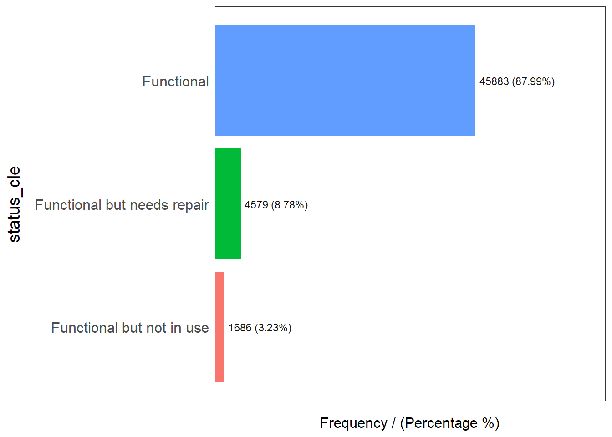
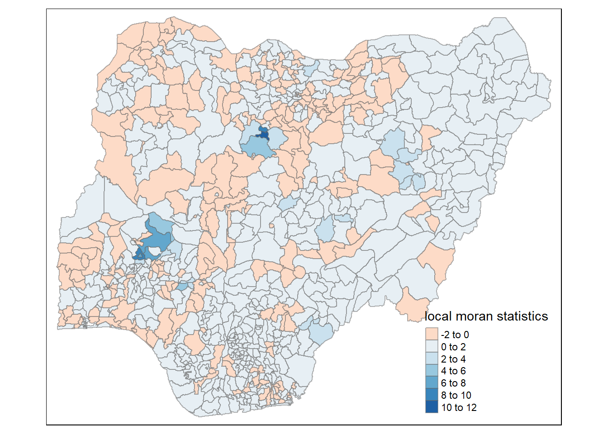

pacman::p_load(sf, tidyverse, tmap, spdep, funModeling)Take-home Exercise 1: Analysing and Visualising Spatial Patterns of Non-Functional Water Points
Overview
Background
Water is a scarce resources especially for developing countries and Nigeria is one of them. According to an article from DowntoEarth.org in 2022, more than 60% of the Nigeria’s population do not have access to potable water, and people live in urban slums or rural parts of the countries both have difficulties in getting proper supply of water.
In order to understand the severity of the situation, we want to deep dive into the city levels of data (amd2) and visualise the spatial patterns of the water points, with focus on the non-functional ones, in Nigeria.
The analytical question
As we know that Nigeria have serious issues with their water supply, we need to answer the below questions for this analysis on the non-functional water points:
Are water points evenly distributed in Nigeria? if the answer is No. then,
Is there sign of spatial clustering? if the answer is Yes. then,
Where are these clusters?
Getting Started
In the code chunk below, p_load() of pacman package is used to install and load the following R packages into R environment:
sf: used for importing, managing, and processing geospatial data
tidyverse: a collection of packages for data science tasks
tmap: used for creating thematic maps, such as choropleth and bubble maps
spdep: used to compute spatial weights, global and local spatial autocorrelation statistics, and
funModeling: used for rapid Exploratory Data Analysis
Importing Geospatial Data
Two geospatial data sets will be used, they are:
geo_export
nga_admbnda_adm2_osgof_20190417
Importing water point geospatial data
First, we are going to import the water point geospatial data (i.e. geo_export) by using the code chunk below.
wp <- st_read(dsn = "geodata",
layer = "geo_export",
crs = 4326) %>%
filter(clean_coun == "Nigeria")Things to learn from the code chunk above:
st_read()of sf package is used to import geo_export shapefile into R environment and save the imported geospatial data into simple feature data table.filter()of dplyr package is used to extract water point records of Nigeria.
Be warned: Avoid performing transformation if you plan to use
st_intersects()of sf package in the later stage of the geoprocessing. This is becausest_intersects()only works correctly if the geospatial data are in geographic coordinate system (i.e. wgs84)
Next, write_rds() of readr package is used to save the extracted sf data table (i.e. wp) into an output file in rds data format. The output file is called wp_nga.rds and it is saved in geodata sub-folder.
wp_nga <- write_rds(wp,
"geodata/wp_nga.rds")Importing Nigeria LGA boundary data
nga <- st_read(dsn = "geodata",
layer = "nga_admbnda_adm2_osgof_20190417",
crs = 4326)Reading layer `nga_admbnda_adm2_osgof_20190417' from data source
`C:\chenfx91\ISSS624\Take-home_Ex\Take-home_Ex1\geodata' using driver `ESRI Shapefile'
Simple feature collection with 774 features and 16 fields
Geometry type: MULTIPOLYGON
Dimension: XY
Bounding box: xmin: 2.668534 ymin: 4.273007 xmax: 14.67882 ymax: 13.89442
Geodetic CRS: WGS 84Thing to learn from the code chunk above.
st_read()of sf package is used to import nga_admbnda_adm2_osgof_20190417 shapefile into R environment and save the imported geospatial data into simple feature data table.
Data Wrangling
Recoding NA values into string
In the code chunk below, replace_na() is used to recode all the NA values in status_cle field into Unknown.
wp_nga <- read_rds("geodata/wp_nga.rds") %>%
mutate(status_cle = replace_na(status_cle,"unknown"))EDA
In the code chunk below, freq() of funModeling package is used to display the distribution of status_cle field in wp_nga.
freq(data=wp_nga,
input = 'status_cle')Warning: `guides(<scale> = FALSE)` is deprecated. Please use `guides(<scale> =
"none")` instead. status_cle frequency percentage cumulative_perc
1 Functional 45883 48.29 48.29
2 Non-Functional 29385 30.93 79.22
3 unknown 10656 11.22 90.44
4 Functional but needs repair 4579 4.82 95.26
5 Non-Functional due to dry season 2403 2.53 97.79
6 Functional but not in use 1686 1.77 99.56
7 Abandoned/Decommissioned 234 0.25 99.81
8 Abandoned 175 0.18 99.99
9 Non functional due to dry season 7 0.01 100.00Extracting Water Point Data
In this section, we will extract the water point records by using classes in status_cle field.
Extracting functional water point
In the code chunk below, filter() of dplyr is used to select functional water points.
wpt_functional <- wp_nga %>%
filter(status_cle %in%
c("Functional",
"Functional but not in use",
"Functional but needs repair"))freq(data=wpt_functional,
input = 'status_cle')Warning: `guides(<scale> = FALSE)` is deprecated. Please use `guides(<scale> =
"none")` instead.
status_cle frequency percentage cumulative_perc
1 Functional 45883 87.99 87.99
2 Functional but needs repair 4579 8.78 96.77
3 Functional but not in use 1686 3.23 100.00Extracting non-functional water point
In the code chunk below, filter() of dplyr is used to select non-functional water points.
wpt_nonfunctional <- wp_nga %>%
filter(status_cle %in%
c("Abandoned/Decommissioned",
"Abandoned",
"Non-Functional",
"Non functional due to dry season",
"Non-Functional due to dry season"))From the above bar charts, we can see there are shocking amount of non-functional water points (31%) across Nigeria.
freq(data=wpt_nonfunctional,
input = 'status_cle')Warning: `guides(<scale> = FALSE)` is deprecated. Please use `guides(<scale> =
"none")` instead.
status_cle frequency percentage cumulative_perc
1 Non-Functional 29385 91.25 91.25
2 Non-Functional due to dry season 2403 7.46 98.71
3 Abandoned/Decommissioned 234 0.73 99.44
4 Abandoned 175 0.54 99.98
5 Non functional due to dry season 7 0.02 100.00Extracting water point with unknown class
wpt_unknown <- wp_nga %>%
filter(status_cle == "Unknown")Performing Point-in-Polygon Count
nga_wp <- nga %>%
mutate(`total wpt` = lengths(
st_intersects(nga, wp_nga))) %>%
mutate(`wpt functional` = lengths(
st_intersects(nga, wpt_functional))) %>%
mutate(`wpt non-functional` = lengths(
st_intersects(nga, wpt_nonfunctional))) %>%
mutate(`wpt unknown` = lengths(
st_intersects(nga, wpt_unknown)))Saving the Analytical Data Table
nga_wp <- nga_wp %>%
mutate(pct_functional = `wpt functional`/`total wpt`) %>%
mutate(`pct_non-functional` = `wpt non-functional`/`total wpt`) %>%
select(3:4, 9:10, 18:23)Things to learn from the code chunk above:
mutate()of dplyr package is used to derive two fields namely pct_functional and pct_non-functional.to keep the file size small,
select()of dplyr is used to retain only field 3,4,9,10, 18,19,20,21,22,and 23.
Now, you have the tidy sf data table subsequent analysis. We will save the sf data table into rds format.
write_rds(nga_wp, "geodata/nga_wp.rds")Visualising the spatial distribution of water points
Note that there are three Projected Coordinate Systems of Nigeria, namely, EPSG: 26391, 26392, and 26303. We will need to check the current source data on its Coordinate system and do the transformation if necessary, this could be achieve from the code chunk below.
st_crs(nga_wp)Coordinate Reference System:
User input: EPSG:4326
wkt:
GEOGCRS["WGS 84",
DATUM["World Geodetic System 1984",
ELLIPSOID["WGS 84",6378137,298.257223563,
LENGTHUNIT["metre",1]]],
PRIMEM["Greenwich",0,
ANGLEUNIT["degree",0.0174532925199433]],
CS[ellipsoidal,2],
AXIS["geodetic latitude (Lat)",north,
ORDER[1],
ANGLEUNIT["degree",0.0174532925199433]],
AXIS["geodetic longitude (Lon)",east,
ORDER[2],
ANGLEUNIT["degree",0.0174532925199433]],
USAGE[
SCOPE["Horizontal component of 3D system."],
AREA["World."],
BBOX[-90,-180,90,180]],
ID["EPSG",4326]]From the print above, we can see that the EPSG code is wrong (currently is 4326), we need to transform it to the correct code to the nga_wp data frame, st_transform() of sf package is used as shown in the code chunk below.
nga_wp <- st_transform(nga_wp,
crs = 26391)
st_crs(nga_wp)Coordinate Reference System:
User input: EPSG:26391
wkt:
PROJCRS["Minna / Nigeria West Belt",
BASEGEOGCRS["Minna",
DATUM["Minna",
ELLIPSOID["Clarke 1880 (RGS)",6378249.145,293.465,
LENGTHUNIT["metre",1]]],
PRIMEM["Greenwich",0,
ANGLEUNIT["degree",0.0174532925199433]],
ID["EPSG",4263]],
CONVERSION["Nigeria West Belt",
METHOD["Transverse Mercator",
ID["EPSG",9807]],
PARAMETER["Latitude of natural origin",4,
ANGLEUNIT["degree",0.0174532925199433],
ID["EPSG",8801]],
PARAMETER["Longitude of natural origin",4.5,
ANGLEUNIT["degree",0.0174532925199433],
ID["EPSG",8802]],
PARAMETER["Scale factor at natural origin",0.99975,
SCALEUNIT["unity",1],
ID["EPSG",8805]],
PARAMETER["False easting",230738.26,
LENGTHUNIT["metre",1],
ID["EPSG",8806]],
PARAMETER["False northing",0,
LENGTHUNIT["metre",1],
ID["EPSG",8807]]],
CS[Cartesian,2],
AXIS["(E)",east,
ORDER[1],
LENGTHUNIT["metre",1]],
AXIS["(N)",north,
ORDER[2],
LENGTHUNIT["metre",1]],
USAGE[
SCOPE["Engineering survey, topographic mapping."],
AREA["Nigeria - onshore west of 6°30'E, onshore and offshore shelf."],
BBOX[3.57,2.69,13.9,6.5]],
ID["EPSG",26391]]total <- qtm(nga_wp, "total wpt")
wp_functional <- qtm(nga_wp, "wpt functional")
wp_nonfunctional <- qtm(nga_wp, "wpt non-functional")
unknown <- qtm(nga_wp, "wpt unknown")
tmap_arrange(total, wp_functional, wp_nonfunctional, unknown, asp=1, ncol=2)From the above graphs, we can see that in the northern part of the country, we can see more functional water points while in the central and east sides, there are more non-functional water points. However, it is not enough to identify which areas are the most serious and requires most immediate attentions and actions. Below spatial analysis is conducted to find out such areas.
Global Spatial Autocorrelation
Computing Contiguity Spatial Weights
wp_wm_q <- poly2nb(nga_wp,
queen = TRUE)
summary(wp_wm_q)Neighbour list object:
Number of regions: 774
Number of nonzero links: 4440
Percentage nonzero weights: 0.7411414
Average number of links: 5.736434
1 region with no links:
86
Link number distribution:
0 1 2 3 4 5 6 7 8 9 10 11 12 14
1 2 14 57 125 182 140 122 72 41 12 4 1 1
2 least connected regions:
138 560 with 1 link
1 most connected region:
508 with 14 linksThe summary report above shows that there are 774 area units in Nigeria. The most connected area unit has 14 neighbours. There are two area units with only one neighbours. There is 1 regoin with no links.
Row-standardised weights matrix
Next, we need to assign weights to each neighboring polygon. In our case, each neighboring polygon will be assigned equal weight (style=“W”). This is accomplished by assigning the fraction 1/(# of neighbors) to each neighboring county then summing the weighted income values. While this is the most intuitive way to summaries the neighbors’ values it has one drawback in that polygons along the edges of the study area will base their lagged values on fewer polygons thus potentially over- or under-estimating the true nature of the spatial autocorrelation in the data. For this example, we’ll stick with the style=“W” option for simplicity’s sake but note that other more robust options are available, notably style=“B”.
From the above, we know that there is one area has no neighbours, hence, the below code chunk includes codes to exclude the region with no links.
wp_rswm_q <- nb2listw(wp_wm_q,
style = "W",
zero.policy = TRUE)
print(nb2listw(neighbours = wp_wm_q, zero.policy = TRUE), zero.policy = TRUE)Characteristics of weights list object:
Neighbour list object:
Number of regions: 774
Number of nonzero links: 4440
Percentage nonzero weights: 0.7411414
Average number of links: 5.736434
1 region with no links:
86
Weights style: W
Weights constants summary:
n nn S0 S1 S2
W 773 597529 773 285.0658 3198.414get.ZeroPolicyOption()[1] FALSEset.ZeroPolicyOption(TRUE)[1] FALSEget.ZeroPolicyOption()[1] TRUEwp_rswm_qCharacteristics of weights list object:
Neighbour list object:
Number of regions: 774
Number of nonzero links: 4440
Percentage nonzero weights: 0.7411414
Average number of links: 5.736434
1 region with no links:
86
Weights style: W
Weights constants summary:
n nn S0 S1 S2
W 773 597529 773 285.0658 3198.414Global Spatial Autocorrelation: Moran’s I
Maron’s I test
The Null Hypothesis:
The non-functional water points are randomly distributed in Nigeria
moran.test(nga_wp$`wpt non-functional`,
listw=wp_rswm_q,
zero.policy = TRUE,
na.action=na.omit)
Moran I test under randomisation
data: nga_wp$`wpt non-functional`
weights: wp_rswm_q n reduced by no-neighbour observations
Moran I statistic standard deviate = 20.043, p-value < 2.2e-16
alternative hypothesis: greater
sample estimates:
Moran I statistic Expectation Variance
0.433932927 -0.001295337 0.000471516 From the p-value <2.2e-16, we reject the null hyphothesis at 95% significant level, and conclude that there is spatial pattern of non-functional water points in Nigeria. From the Moran I (Z value) is positive, we can conclude that there are clusters of non-functional water points in Nigeria.
Computing Monte Carlo Moran’s I
Conducting Monte Carlo Stimulation to further confirm on Moran’s I test.
set.seed(1234)
wp_nf_bperm= moran.mc(nga_wp$`wpt non-functional`,
listw=wp_rswm_q,
nsim=999,
zero.policy = TRUE,
na.action=na.omit)
wp_nf_bperm
Monte-Carlo simulation of Moran I
data: nga_wp$`wpt non-functional`
weights: wp_rswm_q
number of simulations + 1: 1000
statistic = 0.43393, observed rank = 1000, p-value = 0.001
alternative hypothesis: greaterFrom the above simulation, p-value = 0.001, we can confirm that the null hyphothesis is rejected at 95% significant level.
Visualising Monte Carlo Moran’s I
The code chunk below shows the distribution of the statistical values of the simulated Moran’s I test as a histogram.
mean(wp_nf_bperm$res[1:999])[1] -0.0005316305var(wp_nf_bperm$res[1:999])[1] 0.0004973974summary(wp_nf_bperm$res[1:999]) Min. 1st Qu. Median Mean 3rd Qu. Max.
-0.0651127 -0.0150421 -0.0020783 -0.0005316 0.0143726 0.0798599 hist(wp_nf_bperm$res,
freq=TRUE,
breaks=20,
xlab="Simulated Moran's I")
abline(v=0,
col="red") From the histogram output above, we can see that the distribution follows a normal distribution with an outlier.
Spatial Correlogram
Spatial correlograms are great to examine patterns of spatial autocorrelation in your data or model residuals. They show how correlated are pairs of spatial observations when we increase the distance (lag) between them.
Compute Moran’s I correlogram
In the code chunk below, sp.correlogram() of spdep package is used to compute a 6-lag spatial correlogram of non-functional water points in Nigeria. The global spatial autocorrelation used in Moran’s I. The plot() of base Graph is then used to plot the output.
MI_corr_wp <- sp.correlogram(wp_wm_q,
nga_wp$`wpt non-functional`,
order=6,
method="I",
style="W")
plot(MI_corr_wp)
print(MI_corr_wp)Spatial correlogram for nga_wp$`wpt non-functional`
method: Moran's I
estimate expectation variance standard deviate Pr(I) two sided
1 (773) 4.3393e-01 -1.2953e-03 4.7152e-04 20.0433 < 2.2e-16
2 (773) 2.6647e-01 -1.2953e-03 2.0206e-04 18.8374 < 2.2e-16
3 (773) 1.9507e-01 -1.2953e-03 1.2189e-04 17.7863 < 2.2e-16
4 (773) 1.4019e-01 -1.2953e-03 8.7589e-05 15.1181 < 2.2e-16
5 (773) 6.3735e-02 -1.2953e-03 6.8779e-05 7.8413 4.459e-15
6 (773) 2.1698e-02 -1.2953e-03 5.7380e-05 3.0354 0.002402
1 (773) ***
2 (773) ***
3 (773) ***
4 (773) ***
5 (773) ***
6 (773) **
---
Signif. codes: 0 '***' 0.001 '**' 0.01 '*' 0.05 '.' 0.1 ' ' 1From the above correlogram, we can see that with the lags increases, Moran’s I value is more and more approaching to 0, and the observations will be more randomly over the study area.
Cluster and Outlier Analysis
Local Indicators of Spatial Association or LISA are statistics that evaluate the existence of clusters in the spatial arrangement of a given variable. In this section, we will apply LISA by using local Moran’s I to detect cluster and/or outlier for the non-functional water points in Nigeria.
Computing local Moran’s I
fips_wp <- order(nga_wp$ADM2_EN)
localMI_wp <- localmoran(nga_wp$`wpt non-functional`, wp_rswm_q)
head(localMI_wp) Ii E.Ii Var.Ii Z.Ii Pr(z != E(Ii))
1 -0.32365786 -9.995243e-04 1.924638e-01 -0.73547576 0.46204980
2 0.07000542 -4.092463e-05 1.053077e-02 0.68258288 0.49487045
3 1.25819985 -1.627684e-03 4.181728e-01 1.94819847 0.05139122
4 -0.03537489 -5.427505e-05 5.954304e-03 -0.45773361 0.64714384
5 0.01201533 -2.590965e-04 3.988998e-02 0.06145673 0.95099547
6 0.00768085 -1.538445e-07 1.687859e-05 1.86960486 0.06153871The code chunk below list the content of the local Moran matrix derived by using printCoefmat().
table(duplicated(nga_wp$ADM2_EN))
FALSE TRUE
768 6 printCoefmat(data.frame(
localMI_wp[fips_wp,],
row.names=nga_wp$ADM2_PCODE[fips_wp]),
check.names=FALSE) Ii E.Ii Var.Ii Z.Ii Pr.z....E.Ii..
NG001001 -3.2366e-01 -9.9952e-04 1.9246e-01 -7.3548e-01 0.4620
NG001002 7.0005e-02 -4.0925e-05 1.0531e-02 6.8258e-01 0.4949
NG008001 1.2582e+00 -1.6277e-03 4.1817e-01 1.9482e+00 0.0514
NG015001 -3.5375e-02 -5.4275e-05 5.9543e-03 -4.5773e-01 0.6471
NG003001 1.2015e-02 -2.5910e-04 3.9890e-02 6.1457e-02 0.9510
NG011001 7.6808e-03 -1.5384e-07 1.6879e-05 1.8696e+00 0.0615
NG028001 2.3716e-01 -6.6542e-04 8.5226e-02 8.1464e-01 0.4153
NG028002 1.3499e-01 -6.9507e-05 1.3396e-02 1.1669e+00 0.2433
NG009001 5.8469e-01 -3.9167e-04 6.0293e-02 2.3828e+00 0.0172
NG017001 1.9145e-01 -2.2881e-04 2.5098e-02 1.2099e+00 0.2263
NG033001 6.7485e-01 -7.6926e-04 8.4332e-02 2.3265e+00 0.0200
NG015002 1.3484e-01 -9.2780e-04 8.8869e-02 4.5543e-01 0.6488
NG023001 1.6286e-02 -4.0925e-05 6.3021e-03 2.0567e-01 0.8370
NG007001 -3.1655e-02 -2.9456e-05 2.8239e-03 -5.9514e-01 0.5518
NG028003 -3.1637e-01 -1.0254e-02 1.1135e+00 -2.9010e-01 0.7717
NG013001 6.8612e-02 -9.2780e-04 1.4275e-01 1.8406e-01 0.8540
NG031001 2.4270e-02 -1.9868e-05 5.1126e-03 3.3971e-01 0.7341
NG011002 5.8712e-01 -1.1792e-03 1.8138e-01 1.3814e+00 0.1672
NG011003 -8.6368e-03 -8.6620e-05 1.1101e-02 -8.1152e-02 0.9353
NG027001 -2.1125e-02 -1.8249e-05 2.8103e-03 -3.9815e-01 0.6905
NG007002 -6.1300e-02 -1.4475e-04 2.2288e-02 -4.0963e-01 0.6821
NG025001 2.8968e-01 -1.3297e-03 3.4172e-01 4.9782e-01 0.6186
NG004001 8.3857e-01 -1.1920e-03 1.8334e-01 1.9612e+00 0.0499
NG027002 1.5893e-03 -2.7477e-05 5.2960e-03 2.2217e-02 0.9823
NG017002 1.3175e-01 -8.6620e-05 9.5025e-03 1.3525e+00 0.1762
NG033002 8.0063e-01 -9.3914e-04 1.8085e-01 1.8849e+00 0.0594
NG033003 8.4077e-01 -1.6277e-03 2.5025e-01 1.6840e+00 0.0922
NG030001 -1.9940e-03 -1.2099e-02 1.3113e+00 8.8241e-03 0.9930
NG030002 3.0859e-01 -2.2324e-04 2.4486e-02 1.9735e+00 0.0484
NG013002 2.5468e-01 -3.1865e-04 3.0540e-02 1.4592e+00 0.1445
NG023002 9.3035e-03 -6.3380e-06 8.1230e-04 3.2665e-01 0.7439
NG025002 1.0902e+00 -1.5504e-03 3.9834e-01 1.7298e+00 0.0837
NG020001 8.0526e-02 -1.9868e-05 2.5464e-03 1.5962e+00 0.1104
NG009002 2.2617e-01 -2.7477e-05 3.0145e-03 4.1198e+00 0.0000
NG031002 -1.7370e-01 -3.5422e-04 3.8849e-02 -8.7950e-01 0.3791
NG016001 3.6215e+00 -1.7248e-02 1.6251e+00 2.8544e+00 0.0043
NG012001 -9.7994e-02 -6.9507e-05 4.8271e-03 -1.4094e+00 0.1587
NG029001 2.6132e+00 -5.7830e-03 6.3080e-01 3.2975e+00 0.0010
NG029002 1.8731e+00 -1.5753e-02 2.9886e+00 1.0926e+00 0.2746
NG029003 2.9695e+00 -3.9022e-03 7.4920e-01 3.4353e+00 0.0006
NG029004 4.0806e+00 -1.3638e-02 2.0716e+00 2.8446e+00 0.0044
NG009003 7.7463e-01 -8.2075e-03 1.5690e+00 6.2497e-01 0.5320
NG033004 7.5445e-01 -1.3297e-03 3.4172e-01 1.2929e+00 0.1960
NG029005 -9.4511e-02 -2.0041e-04 2.5680e-02 -5.8852e-01 0.5562
NG029006 -4.0892e-01 -1.0618e-03 2.7294e-01 -7.8067e-01 0.4350
NG026001 1.7264e-02 -1.8555e-06 3.5764e-04 9.1300e-01 0.3612
NG020002 -6.0666e-01 -4.4019e-03 6.7490e-01 -7.3309e-01 0.4635
NG022001 3.8136e-02 -1.0903e-05 2.1016e-03 8.3213e-01 0.4053
NG025003 -2.6481e-01 -9.2780e-04 1.0170e-01 -8.2749e-01 0.4080
NG005001 -3.6486e-01 -1.7389e-04 1.6668e-02 -2.8247e+00 0.0047
NG025004 6.4059e-01 -1.0618e-03 1.0169e-01 2.0122e+00 0.0442
NG004002 5.2295e-01 -6.1632e-04 7.8942e-02 1.8634e+00 0.0624
NG004003 5.1817e-01 -5.6910e-04 5.4530e-02 2.2214e+00 0.0263
NG004004 6.8852e-01 -7.1640e-04 7.8541e-02 2.4593e+00 0.0139
NG033005 7.4747e-01 -8.8063e-04 2.2641e-01 1.5727e+00 0.1158
NG014001 5.8669e-01 -1.6277e-03 2.5025e-01 1.1760e+00 0.2396
NG010001 9.1402e-01 -1.2599e-03 2.4254e-01 1.8585e+00 0.0631
NG010002 7.1930e-01 -1.3297e-03 1.4569e-01 1.8880e+00 0.0590
NG037001 -3.0961e-02 -5.2377e-04 8.0617e-02 -1.0720e-01 0.9146
NG023003 3.2899e-03 -3.3373e-07 3.6614e-05 5.4375e-01 0.5866
NG007003 7.1599e-02 -2.9126e-04 4.4841e-02 3.3949e-01 0.7342
NG025005 1.1170e+00 -1.6277e-03 2.0827e-01 2.4512e+00 0.0142
NG035001 5.9556e-01 -6.0715e-04 7.7767e-02 2.1378e+00 0.0325
NG022002 -7.0312e-02 -2.9456e-05 2.8239e-03 -1.3226e+00 0.1860
NG022003 4.0210e-02 -3.1865e-04 4.9056e-02 1.8298e-01 0.8548
NG001003 9.0458e-02 -1.1259e-03 1.4414e-01 2.4123e-01 0.8094
NG024001 6.6358e-02 -1.8555e-06 2.0357e-04 4.6511e+00 0.0000
NG033006 9.9615e-01 -1.1259e-03 4.3469e-01 1.5126e+00 0.1304
NG008002 9.5142e-01 -1.1259e-03 9.5720e-02 3.0788e+00 0.0021
NG030003 1.5763e+00 -2.3901e-03 3.6719e-01 2.6053e+00 0.0092
NG030004 1.3676e+00 -3.5471e-03 3.0082e-01 2.4999e+00 0.0124
NG031003 9.2471e-02 -1.4925e-04 1.4307e-02 7.7435e-01 0.4387
NG031004 -3.7128e-02 -8.3203e-05 1.0663e-02 -3.5875e-01 0.7198
NG022004 -3.1518e-02 -1.2649e-04 1.6210e-02 -2.4656e-01 0.8052
NG018001 -9.2317e-03 -1.9519e-04 2.1411e-02 -6.1757e-02 0.9508
NG026002 -3.8035e-02 -2.3951e-06 2.2963e-04 -2.5098e+00 0.0121
NG014002 7.1490e-01 -1.0618e-03 1.3594e-01 1.9419e+00 0.0522
NG004005 8.4336e-01 -1.6277e-03 1.7829e-01 2.0012e+00 0.0454
NG004006 7.2523e-01 -9.9952e-04 1.5377e-01 1.8520e+00 0.0640
NG004007 5.3888e-01 -4.8031e-04 7.3931e-02 1.9837e+00 0.0473
NG018002 3.4904e+00 -9.4838e-03 1.4466e+00 2.9099e+00 0.0036
NG025006 1.1262e+00 -3.3198e-03 8.5145e-01 1.2241e+00 0.2209
NG036001 -4.1318e-01 -3.9167e-04 7.5464e-02 -1.5026e+00 0.1329
NG022005 -1.6794e-01 -5.4275e-05 8.3578e-03 -1.8364e+00 0.0663
NG020003 -1.0457e-01 -3.8586e-05 4.2332e-03 -1.6066e+00 0.1081
NG009005 0.0000e+00 0.0000e+00 0.0000e+00 NaN NaN
NG021001 9.7051e-02 -1.4925e-04 1.9126e-02 7.0284e-01 0.4822
NG037002 1.3239e-01 -1.1259e-03 1.4414e-01 3.5167e-01 0.7251
NG016002 8.6819e-01 -5.3489e-03 5.8371e-01 1.1434e+00 0.2529
NG035002 2.8316e-01 -1.6128e-03 1.3704e-01 7.6927e-01 0.4417
NG008003 1.2582e+00 -1.6277e-03 3.1322e-01 2.2510e+00 0.0244
NG032001 1.5674e+00 -3.2090e-03 4.0996e-01 2.4530e+00 0.0142
NG024002 1.5345e-02 -2.7477e-05 3.5215e-03 2.5904e-01 0.7956
NG023004 6.5838e-03 -9.8783e-04 9.4613e-02 2.4616e-02 0.9804
NG032002 7.6830e-02 -6.6449e-05 8.5158e-03 8.3329e-01 0.4047
NG021002 1.0339e-01 -8.3203e-05 9.1276e-03 1.0831e+00 0.2788
NG021003 1.3652e-02 -1.0184e-04 1.5681e-02 1.0983e-01 0.9125
NG005002 1.1441e-01 -8.6620e-05 1.3338e-02 9.9137e-01 0.3215
NG021004 1.7511e+00 -5.0690e-03 7.7665e-01 1.9927e+00 0.0463
NG008004 2.3957e-01 -3.9905e-04 6.1428e-02 9.6821e-01 0.3329
NG020004 -3.3289e-02 -9.9952e-04 1.5377e-01 -8.2343e-02 0.9344
NG009006 1.3164e+00 -1.5358e-03 2.3615e-01 2.7122e+00 0.0067
NG001004 4.0316e-01 -6.6542e-04 6.3753e-02 1.5994e+00 0.1097
NG009007 1.8824e-01 -2.5316e-04 2.4265e-02 1.2100e+00 0.2263
NG020005 -1.4448e-01 -1.0184e-04 1.3051e-02 -1.2638e+00 0.2063
NG027003 -2.7746e-01 -1.2649e-04 4.8883e-02 -1.2544e+00 0.2097
NG016003 2.5014e+00 -3.3198e-03 6.3776e-01 3.1364e+00 0.0017
NG021005 -6.5757e-02 -1.2235e-04 1.5680e-02 -5.2416e-01 0.6002
NG034001 -1.5657e-01 -3.5422e-04 4.5383e-02 -7.3329e-01 0.4634
NG018003 -4.0714e-01 -7.5196e-03 9.5649e-01 -4.0861e-01 0.6828
NG018004 -5.2572e-04 -5.6910e-04 5.4530e-02 1.8579e-04 0.9999
NG019001 1.4369e+00 -5.3489e-03 4.0699e-01 2.2607e+00 0.0238
NG022006 -3.8910e-01 -6.1632e-04 7.8942e-02 -1.3827e+00 0.1668
NG037003 2.8350e-01 -3.9905e-04 5.1123e-02 1.2556e+00 0.2093
NG008005 1.1070e+00 -1.6277e-03 1.5580e-01 2.8086e+00 0.0050
NG034002 -3.9128e-03 -2.7477e-05 4.2313e-03 -5.9730e-02 0.9524
NG005003 -2.2763e-01 -2.2881e-04 5.8867e-02 -9.3725e-01 0.3486
NG009008 2.6518e+00 -7.0234e-03 1.0740e+00 2.5656e+00 0.0103
NG032003 5.0676e-01 -2.2324e-04 2.8605e-02 2.9976e+00 0.0027
NG030005 3.1906e-01 -8.3203e-05 1.6036e-02 2.5203e+00 0.0117
NG010003 6.1173e-01 -1.4014e-03 2.1550e-01 1.3208e+00 0.1866
NG033007 1.0868e+00 -1.6277e-03 2.0827e-01 2.3850e+00 0.0171
NG027004 -1.6043e-01 -2.5910e-04 2.2046e-02 -1.0787e+00 0.2807
NG030006 1.1122e+00 -1.7723e-03 2.2675e-01 2.3395e+00 0.0193
NG027005 -2.0497e-02 -1.4925e-04 1.9126e-02 -1.4713e-01 0.8830
NG006001 2.9959e-01 -6.1632e-04 2.3806e-01 6.1529e-01 0.5384
NG018005 4.5026e-03 -3.3373e-07 5.1394e-05 6.2812e-01 0.5299
NG037004 -3.1431e-02 -2.5910e-04 3.9890e-02 -1.5607e-01 0.8760
NG037005 2.0237e-01 -8.8063e-04 1.1277e-01 6.0526e-01 0.5450
NG020006 3.6342e-02 -1.2649e-04 1.3876e-02 3.0959e-01 0.7569
NG022007 8.8429e-01 -2.5835e-03 3.9683e-01 1.4079e+00 0.1592
NG036002 4.7994e-01 -5.2377e-04 5.0189e-02 2.1447e+00 0.0320
NG007004 5.0409e-01 -7.5901e-04 9.7204e-02 1.6193e+00 0.1054
NG010004 8.0259e-01 -1.4014e-03 2.6973e-01 1.5480e+00 0.1216
NG015003 3.2095e-01 -2.5316e-04 4.8784e-02 1.4543e+00 0.1459
NG009010 -5.6408e-01 -2.2881e-04 5.8867e-02 -2.3240e+00 0.0201
NG009009 1.0900e-01 -3.8586e-05 7.4371e-03 1.2644e+00 0.2061
NG027006 1.4615e-02 -2.3951e-06 1.8538e-03 3.3950e-01 0.7342
NG021006 5.5125e-02 -5.1577e-05 6.6100e-03 6.7866e-01 0.4974
NG008006 9.5921e-01 -1.0618e-03 2.7294e-01 1.8380e+00 0.0661
NG019002 -9.5427e-01 -1.3297e-03 1.2731e-01 -2.6707e+00 0.0076
NG020007 -1.5215e-01 -1.2235e-04 2.3581e-02 -9.8999e-01 0.3222
NG036003 1.0215e+00 -1.4014e-03 2.1550e-01 2.2035e+00 0.0276
NG005004 1.7310e-02 -1.8249e-05 2.3389e-03 3.5830e-01 0.7201
NG020008 5.8823e-01 -8.6966e-04 1.3381e-01 1.6104e+00 0.1073
NG008007 1.2015e+00 -1.6277e-03 1.5580e-01 3.0481e+00 0.0023
NG021007 1.9828e-01 -1.1259e-03 1.2339e-01 5.6767e-01 0.5703
NG022008 6.0353e-01 -5.2080e-03 9.9861e-01 6.0916e-01 0.5424
NG021008 2.5690e-02 -1.8555e-06 3.5764e-04 1.3585e+00 0.1743
NG034003 8.6937e-02 -1.2649e-04 1.3876e-02 7.3910e-01 0.4598
NG021009 -2.5042e-01 -2.9126e-04 3.7319e-02 -1.2948e+00 0.1954
NG005005 5.2452e-03 -1.0903e-05 1.1962e-03 1.5197e-01 0.8792
NG005006 2.4361e-01 -3.6124e-04 1.3957e-01 6.5305e-01 0.5137
NG021010 4.0067e-01 -8.1339e-04 2.0914e-01 8.7790e-01 0.3800
NG020009 -1.3898e-01 -4.3100e-04 5.5216e-02 -5.8963e-01 0.5554
NG020010 5.3574e-01 -1.0618e-03 1.3594e-01 1.4559e+00 0.1454
NG033008 8.9537e-01 -1.4749e-03 1.4120e-01 2.3867e+00 0.0170
NG023005 1.9339e-02 -8.1339e-04 1.5665e-01 5.0915e-02 0.9594
NG002001 7.6650e-01 -1.4014e-03 1.5353e-01 1.9598e+00 0.0500
NG008008 1.2582e+00 -1.6277e-03 2.0827e-01 2.7606e+00 0.0058
NG020011 -8.4890e-03 -1.0903e-05 1.3974e-03 -2.2680e-01 0.8206
NG026003 -6.3606e-02 -5.4275e-05 4.6190e-03 -9.3509e-01 0.3497
NG035003 1.1977e+00 -1.6128e-03 1.5437e-01 3.0525e+00 0.0023
NG016004 2.0702e+00 -5.2080e-03 5.6841e-01 2.7528e+00 0.0059
NG004008 5.5459e-01 -6.1632e-04 9.4853e-02 1.8027e+00 0.0714
NG018006 -2.2400e-01 -1.4749e-03 1.4120e-01 -5.9220e-01 0.5537
NG021011 -2.0141e-01 -2.0041e-04 2.1983e-02 -1.3571e+00 0.1748
NG021012 -6.0268e-02 -6.0715e-04 7.7767e-02 -2.1394e-01 0.8306
NG003002 1.3772e-01 -3.9905e-04 6.1428e-02 5.5729e-01 0.5773
NG011004 -8.3981e-03 -2.3951e-06 3.0697e-04 -4.7919e-01 0.6318
NG027007 3.9793e-01 -1.6916e-03 6.5269e-01 4.9464e-01 0.6209
NG030007 5.9514e-02 -6.6449e-05 1.7098e-02 4.5565e-01 0.6486
NG030008 -8.1927e-02 -6.3380e-06 5.3942e-04 -3.5272e+00 0.0004
NG024003 5.1947e+00 -7.3523e-03 1.1239e+00 4.9069e+00 0.0000
NG013003 -6.0047e-01 -3.2531e-04 6.2682e-02 -2.3971e+00 0.0165
NG028004 4.1374e-01 -3.2531e-04 5.0081e-02 1.8503e+00 0.0643
NG028005 -5.1956e-02 -1.4749e-03 2.2680e-01 -1.0600e-01 0.9156
NG031005 -5.0841e-02 -5.4275e-05 8.3578e-03 -5.5552e-01 0.5785
NG030009 1.4958e-01 -5.1577e-05 4.9446e-03 2.1279e+00 0.0333
NG012002 8.7695e-02 -2.0041e-04 5.1562e-02 3.8708e-01 0.6987
NG017003 2.6769e-01 -3.2531e-04 5.0081e-02 1.1976e+00 0.2311
NG030010 6.3460e-01 -7.8598e-03 8.5553e-01 6.9459e-01 0.4873
NG006002 2.1155e-01 -1.4925e-04 2.8763e-02 1.2482e+00 0.2120
NG003003 2.1926e-02 -1.0562e-04 2.0355e-02 1.5442e-01 0.8773
NG024004 1.3996e+00 -5.9315e-03 7.5570e-01 1.6168e+00 0.1059
NG013004 -1.0664e+00 -1.3297e-03 2.0450e-01 -2.3552e+00 0.0185
NG013005 6.1959e-01 -1.2468e-03 1.3661e-01 1.6797e+00 0.0930
NG013006 6.6563e-01 -1.5358e-03 1.4701e-01 1.7400e+00 0.0819
NG004009 8.4749e-01 -1.4014e-03 2.1550e-01 1.8286e+00 0.0675
NG033009 9.4563e-01 -1.6277e-03 2.0827e-01 2.0757e+00 0.0379
NG033010 6.9021e-01 -1.4749e-03 1.4120e-01 1.8408e+00 0.0657
NG013007 -7.7908e-01 -5.2377e-04 8.0617e-02 -2.7421e+00 0.0061
NG014003 7.7086e-01 -1.3297e-03 2.0450e-01 1.7076e+00 0.0877
NG014004 9.2093e-01 -1.5504e-03 2.3838e-01 1.8894e+00 0.0588
NG014005 7.6545e-01 -1.5504e-03 3.9834e-01 1.2153e+00 0.2243
NG025007 -3.6995e-01 -1.7723e-03 1.6962e-01 -8.9396e-01 0.3713
NG012003 3.0774e-01 -4.3874e-04 8.4529e-02 1.0600e+00 0.2892
NG012004 2.7947e-01 -4.3874e-04 6.7535e-02 1.0771e+00 0.2814
NG012005 3.0774e-01 -4.3874e-04 3.7324e-02 1.5952e+00 0.1107
NG012006 2.5330e-01 -5.2377e-04 6.7093e-02 9.7994e-01 0.3271
NG029007 -1.1965e-01 -8.1339e-04 1.2516e-01 -3.3591e-01 0.7369
NG003004 -6.6417e-02 -2.2324e-04 2.8605e-02 -3.9138e-01 0.6955
NG003005 -9.9313e-03 -6.3380e-06 6.9535e-04 -3.7638e-01 0.7066
NG033011 3.5951e-01 -9.9952e-04 1.0955e-01 1.0892e+00 0.2761
NG010005 1.7751e-01 -7.1640e-04 1.3799e-01 4.7979e-01 0.6314
NG010006 2.3959e-01 -5.6910e-04 8.7591e-02 8.1148e-01 0.4171
NG025008 3.5680e-01 -1.6277e-03 2.5025e-01 7.1649e-01 0.4737
NG003006 5.9762e-04 -6.9507e-05 8.9077e-03 7.0684e-03 0.9944
NG003007 -5.3116e-02 -2.0041e-04 3.0857e-02 -3.0124e-01 0.7632
NG012007 1.7582e-01 -1.4925e-04 2.2981e-02 1.1608e+00 0.2457
NG012008 1.5230e-01 -3.2531e-04 2.7678e-02 9.1739e-01 0.3589
NG012009 2.4259e-01 -3.6124e-04 3.9618e-02 1.2206e+00 0.2222
NG009011 1.4001e+00 -1.6916e-03 4.3457e-01 2.1265e+00 0.0335
NG028006 5.2532e-01 -7.6926e-04 9.8516e-02 1.6761e+00 0.0937
NG014006 7.5812e-01 -9.3914e-04 1.4449e-01 1.9969e+00 0.0458
NG017004 1.6424e-01 -4.8031e-04 7.3931e-02 6.0582e-01 0.5446
NG011005 5.8749e-01 -8.6966e-04 1.1136e-01 1.7631e+00 0.0779
NG011006 3.6410e-01 -3.1865e-04 4.9056e-02 1.6453e+00 0.0999
NG020012 1.8579e-01 -1.3297e-03 2.0450e-01 4.1378e-01 0.6790
NG022009 -3.2768e-01 -9.3914e-04 1.0294e-01 -1.0184e+00 0.3085
NG021013 2.4600e-02 -1.3162e-03 1.2602e-01 7.3004e-02 0.9418
NG036004 1.7425e-01 -1.3297e-03 1.1302e-01 5.2226e-01 0.6015
NG002002 1.1271e+00 -1.6277e-03 2.0827e-01 2.4733e+00 0.0134
NG016005 9.0870e-01 -4.5316e-03 6.9469e-01 1.0957e+00 0.2732
NG036005 5.8078e-01 -4.8031e-04 4.6027e-02 2.7094e+00 0.0067
NG021014 -3.7568e-01 -5.6910e-04 8.7591e-02 -1.2675e+00 0.2050
NG020013 -1.2497e-01 -1.3297e-03 1.7019e-01 -2.9970e-01 0.7644
NG034004 -1.3336e-01 -3.9905e-04 7.6885e-02 -4.7953e-01 0.6316
NG018007 -2.0255e-01 -6.9507e-05 8.9077e-03 -2.1454e+00 0.0319
NG005007 -7.6106e-01 -1.0452e-02 1.3256e+00 -6.5195e-01 0.5144
NG005008 2.7157e-02 -8.8063e-04 8.4354e-02 9.6537e-02 0.9231
NG002003 5.0818e-01 -1.2599e-03 2.4254e-01 1.0344e+00 0.3009
NG018008 2.6512e-01 -1.9394e-03 1.8558e-01 6.1993e-01 0.5353
NG020014 -5.3344e-01 -8.8063e-04 9.6531e-02 -1.7141e+00 0.0865
NG020015 -1.6336e-02 -1.8555e-06 2.8574e-04 -9.6630e-01 0.3339
NG035004 1.1751e-01 -5.1531e-04 9.9274e-02 3.7459e-01 0.7080
NG035005 1.3117e+00 -3.6636e-03 4.6782e-01 1.9231e+00 0.0545
NG020016 -1.3765e-01 -1.4014e-03 2.6973e-01 -2.6234e-01 0.7931
NG027008 4.2520e-02 -9.8783e-04 1.5197e-01 1.1160e-01 0.9111
NG007005 7.7837e-01 -8.6966e-04 1.3381e-01 2.1302e+00 0.0332
NG036006 1.1322e+00 -1.6277e-03 2.0827e-01 2.4844e+00 0.0130
NG020017 -6.3029e-01 -2.3901e-03 3.6719e-01 -1.0362e+00 0.3001
NG005009 4.9513e-02 -8.6620e-05 1.6694e-02 3.8387e-01 0.7011
NG002005 1.0825e+00 -1.4749e-03 2.2680e-01 2.2762e+00 0.0228
NG019003 3.8218e+00 -8.7432e-03 7.3761e-01 4.4601e+00 0.0000
NG033012 1.0730e+00 -1.5504e-03 2.9837e-01 1.9672e+00 0.0492
NG016006 -1.8102e-01 -6.3380e-06 2.4496e-03 -3.6574e+00 0.0003
NG002004 7.0598e-01 -6.1632e-04 7.8942e-02 2.5149e+00 0.0119
NG034006 1.6376e-01 -2.0041e-04 2.5680e-02 1.0232e+00 0.3062
NG008009 1.2461e+00 -1.6277e-03 2.5025e-01 2.4942e+00 0.0126
NG034007 -5.9560e-02 -3.2531e-04 8.3685e-02 -2.0476e-01 0.8378
NG036007 1.1415e+00 -1.6277e-03 1.7829e-01 2.7074e+00 0.0068
NG036008 -2.9028e-01 -1.5504e-03 1.6983e-01 -7.0062e-01 0.4835
NG007006 2.0483e-01 -3.5422e-04 3.0137e-02 1.1819e+00 0.2372
NG018009 3.8132e-01 -1.0059e-02 2.5625e+00 2.4450e-01 0.8068
NG037006 6.0271e-02 -3.9905e-04 4.3763e-02 2.9001e-01 0.7718
NG027009 -1.8991e-02 -3.2531e-04 3.5679e-02 -9.8820e-02 0.9213
NG018010 -2.6016e-01 -4.8031e-04 5.2671e-02 -1.1315e+00 0.2578
NG037007 -1.5029e-02 -6.9507e-05 6.6634e-03 -1.8326e-01 0.8546
NG002006 2.5243e-01 -8.8063e-04 1.6959e-01 6.1511e-01 0.5385
NG008010 1.2582e+00 -1.6277e-03 2.0827e-01 2.7606e+00 0.0058
NG034005 -1.6611e-02 -8.3203e-05 1.0663e-02 -1.6006e-01 0.8728
NG015004 4.4939e-02 -8.3203e-05 1.0663e-02 4.3600e-01 0.6628
NG020018 1.2976e-01 -3.2531e-04 6.2682e-02 5.1958e-01 0.6034
NG022010 3.3150e-02 -2.3901e-03 4.5958e-01 5.2424e-02 0.9582
NG018011 1.7154e-01 -8.2400e-04 7.8934e-02 6.1351e-01 0.5395
NG020019 4.4473e-01 -9.9952e-04 1.2798e-01 1.2460e+00 0.2128
NG007007 1.9014e-01 -1.2468e-03 1.0598e-01 5.8789e-01 0.5566
NG007008 -3.5537e-02 -5.2377e-04 6.7093e-02 -1.3517e-01 0.8925
NG018012 1.5685e-01 -3.9167e-04 5.0179e-02 7.0197e-01 0.4827
NG008011 1.2582e+00 -1.6277e-03 3.1322e-01 2.2510e+00 0.0244
NG018013 4.8530e-01 -1.6916e-03 4.3457e-01 7.3874e-01 0.4601
NG008012 1.0595e+00 -1.4749e-03 2.2680e-01 2.2278e+00 0.0259
NG002007 1.0249e+00 -1.4749e-03 1.8875e-01 2.3625e+00 0.0182
NG031006 -1.6524e-02 -1.3297e-03 2.0450e-01 -3.3600e-02 0.9732
NG031007 -2.9120e-02 -1.0903e-05 1.3974e-03 -7.7869e-01 0.4362
NG031008 2.3890e-01 -2.5910e-04 3.9890e-02 1.1974e+00 0.2311
NG031009 1.9144e-01 -1.1920e-03 1.8334e-01 4.4987e-01 0.6528
NG031010 2.6967e-01 -2.5910e-04 4.9927e-02 1.2081e+00 0.2270
NG023006 2.2770e-01 -2.0041e-04 2.1983e-02 1.5371e+00 0.1243
NG031011 -2.2712e-01 -7.5901e-04 1.1680e-01 -6.6235e-01 0.5077
NG031012 1.8845e-02 -4.0925e-05 5.2449e-03 2.6077e-01 0.7943
NG031013 -3.8965e-02 -5.6029e-04 8.6235e-02 -1.3078e-01 0.8959
NG025009 2.2390e-03 -1.0903e-05 4.2140e-03 3.4659e-02 0.9724
NG003008 1.2904e-01 -8.2400e-04 1.2679e-01 3.6470e-01 0.7153
NG003009 -9.1998e-03 -1.4925e-04 2.2981e-02 -5.9702e-02 0.9524
NG035006 -4.0001e-01 -2.9126e-04 3.1946e-02 -2.2364e+00 0.0253
NG003010 1.3579e-02 -1.0562e-04 1.3535e-02 1.1762e-01 0.9064
NG023007 6.7715e-02 -1.9868e-05 5.1126e-03 9.4731e-01 0.3435
NG029008 2.5630e-01 -1.6903e-04 1.4384e-02 2.1384e+00 0.0325
NG017005 8.9115e-01 -1.3297e-03 1.2731e-01 2.5013e+00 0.0124
NG017006 8.3080e-01 -1.1920e-03 2.2948e-01 1.7368e+00 0.0824
NG004010 8.3572e-01 -1.4749e-03 1.6158e-01 2.0827e+00 0.0373
NG004011 9.4127e-01 -1.3297e-03 1.7019e-01 2.2849e+00 0.0223
NG031014 1.3369e-01 -1.4925e-04 1.4307e-02 1.1189e+00 0.2632
NG013008 -2.6395e-01 -1.4014e-03 2.1550e-01 -5.6557e-01 0.5717
NG025010 -8.5516e-02 -4.8031e-04 7.3931e-02 -3.1274e-01 0.7545
NG030011 1.2702e+00 -2.3901e-03 4.5958e-01 1.8772e+00 0.0605
NG030012 1.8042e+00 -3.5471e-03 6.8127e-01 2.1902e+00 0.0285
NG030013 5.3311e-01 -3.1865e-04 3.4949e-02 2.8534e+00 0.0043
NG030014 1.1625e+00 -9.2780e-04 1.1880e-01 3.3755e+00 0.0007
NG030015 -2.4336e-01 -4.0925e-05 5.2449e-03 -3.3597e+00 0.0008
NG029009 6.2924e-01 -2.4859e-03 2.7205e-01 1.2112e+00 0.2258
NG024005 7.9307e+00 -5.2576e-02 3.4595e+00 4.2921e+00 0.0000
NG030016 1.2027e+00 -1.1135e-03 2.8623e-01 2.2501e+00 0.0244
NG028007 1.2091e-01 -9.3914e-04 7.9854e-02 4.3119e-01 0.6663
NG019004 4.7157e+00 -2.8615e-02 2.3657e+00 3.0846e+00 0.0020
NG023008 5.1810e-01 -7.1640e-04 6.0928e-02 2.1019e+00 0.0356
NG014007 6.0252e-01 -8.2400e-04 1.2679e-01 1.6944e+00 0.0902
NG014008 7.8575e-01 -1.4014e-03 2.1550e-01 1.6956e+00 0.0900
NG014009 9.7099e-01 -1.4014e-03 2.6973e-01 1.8723e+00 0.0612
NG012010 1.2618e-01 -1.7389e-04 2.2283e-02 8.4644e-01 0.3973
NG004012 2.4753e-01 -1.4925e-04 1.6372e-02 1.9357e+00 0.0529
NG017007 3.1114e-01 -5.6910e-04 8.7591e-02 1.0532e+00 0.2922
NG028008 -9.1066e-01 -1.4749e-03 1.2534e-01 -2.5680e+00 0.0102
NG028009 -2.1566e-02 -5.4275e-05 5.2032e-03 -2.9822e-01 0.7655
NG028010 1.0003e-02 -3.3373e-07 6.4326e-05 1.2473e+00 0.2123
NG028011 7.6232e-02 -6.1632e-04 1.1872e-01 2.2303e-01 0.8235
NG013009 -2.1311e-01 -2.9930e-03 4.5953e-01 -3.0996e-01 0.7566
NG023009 3.4728e-01 -3.9167e-04 3.7536e-02 1.7945e+00 0.0727
NG003011 -8.7294e-03 -3.3373e-07 6.4326e-05 -1.0884e+00 0.2764
NG010007 6.1088e-01 -1.6277e-03 2.5025e-01 1.2244e+00 0.2208
NG010008 3.7480e-01 -8.8063e-04 1.6959e-01 9.1226e-01 0.3616
NG019005 -3.3429e-01 -5.6910e-04 6.2402e-02 -1.3359e+00 0.1816
NG017008 2.8228e-01 -6.6542e-04 1.0240e-01 8.8420e-01 0.3766
NG025011 7.8513e-01 -1.5504e-03 1.4841e-01 2.0421e+00 0.0411
NG028012 2.9551e-01 -1.0618e-03 2.0444e-01 6.5590e-01 0.5119
NG013010 1.1550e-01 -1.4475e-04 2.2288e-02 7.7463e-01 0.4386
NG013011 3.1773e-01 -6.5588e-04 7.1911e-02 1.1873e+00 0.2351
NG009012 1.7514e+00 -1.8549e-03 2.3729e-01 3.5991e+00 0.0003
NG003012 2.8249e-02 -1.9868e-05 2.1798e-03 6.0548e-01 0.5449
NG025012 -7.1532e-02 -4.3100e-04 6.6345e-02 -2.7604e-01 0.7825
NG003013 4.7478e-02 -6.9507e-05 1.0703e-02 4.5959e-01 0.6458
NG003014 6.4821e-03 -8.6620e-05 2.2288e-02 4.3999e-02 0.9649
NG012011 3.1590e-02 -1.9868e-05 2.1798e-03 6.7706e-01 0.4984
NG033013 4.3466e-01 -1.4749e-03 2.8387e-01 8.1859e-01 0.4130
NG011007 1.6600e-01 -2.7477e-05 3.5215e-03 2.7978e+00 0.0051
NG001005 -1.4055e-02 -1.8555e-06 2.3780e-04 -9.1131e-01 0.3621
NG030017 1.0542e+00 -5.6029e-04 6.1436e-02 4.2556e+00 0.0000
NG029010 -4.6502e-02 -6.6542e-04 1.2817e-01 -1.2803e-01 0.8981
NG029011 1.7965e+00 -2.2962e-03 3.5280e-01 3.0285e+00 0.0025
NG013012 -2.0831e-01 -3.2531e-04 6.2682e-02 -8.3073e-01 0.4061
NG030018 4.5466e-01 -1.9519e-04 3.7616e-02 2.3452e+00 0.0190
NG030019 1.0931e-01 -1.0903e-05 2.1016e-03 2.3847e+00 0.0171
NG034008 -9.5441e-02 -1.0497e-03 2.6985e-01 -1.8171e-01 0.8558
NG024006 -3.2929e-01 -4.0925e-05 7.8878e-03 -3.7072e+00 0.0002
NG024007 -1.7755e-01 -1.2162e-05 2.3443e-03 -3.6668e+00 0.0002
NG024008 5.6912e-01 -2.2324e-04 3.4370e-02 3.0710e+00 0.0021
NG028013 -2.7842e-01 -1.6277e-03 2.5025e-01 -5.5330e-01 0.5801
NG021015 -2.2698e-02 -3.9905e-04 3.3949e-02 -1.2102e-01 0.9037
NG003015 2.3604e-01 -7.1640e-04 9.1751e-02 7.8162e-01 0.4344
NG028014 -3.1866e-01 -2.5910e-04 4.9927e-02 -1.4250e+00 0.1542
NG029012 3.4339e-01 -2.2324e-04 4.3019e-02 1.6567e+00 0.0976
NG031015 -2.1322e-02 -1.2162e-05 2.3443e-03 -4.4012e-01 0.6599
NG024009 6.6949e+00 -1.1886e-02 1.5053e+00 5.4665e+00 0.0000
NG030020 5.6083e-03 -1.5384e-07 3.9589e-05 8.9137e-01 0.3727
NG013013 -2.1211e-01 -1.2649e-04 1.2126e-02 -1.9251e+00 0.0542
NG030021 1.6871e-01 -6.6449e-05 1.0232e-02 1.6685e+00 0.0952
NG034009 2.2350e-01 -9.9952e-04 1.2798e-01 6.2755e-01 0.5303
NG013014 -3.6619e-01 -1.5504e-03 1.9839e-01 -8.1866e-01 0.4130
NG031016 -6.0131e-03 -8.2400e-04 7.8934e-02 -1.8470e-02 0.9853
NG011008 4.5740e-01 -1.6916e-03 1.8527e-01 1.0666e+00 0.2862
NG014010 -1.8197e-02 -1.8555e-06 1.5792e-04 -1.4479e+00 0.1476
NG001006 6.1303e-03 -1.0562e-04 1.6263e-02 4.8899e-02 0.9610
NG001007 -2.2750e-02 -5.4275e-05 5.9543e-03 -2.9412e-01 0.7687
NG017009 1.3585e-01 -5.4275e-05 6.9558e-03 1.6296e+00 0.1032
NG024010 1.6027e+00 -2.2324e-04 5.7433e-02 6.6885e+00 0.0000
NG001008 4.3276e-01 -5.6910e-04 8.7591e-02 1.4642e+00 0.1431
NG030022 1.3356e-01 -5.1577e-05 7.9423e-03 1.4992e+00 0.1338
NG010009 1.8036e-01 -2.9126e-04 5.6124e-02 7.6255e-01 0.4457
NG010010 2.2985e-01 -5.2377e-04 8.0617e-02 8.1138e-01 0.4171
NG017010 8.0179e-01 -1.4749e-03 2.8387e-01 1.5076e+00 0.1316
NG005010 -1.3378e-02 -2.3951e-06 2.2963e-04 -8.8267e-01 0.3774
NG031017 -1.9886e-01 -1.1259e-03 2.1678e-01 -4.2469e-01 0.6711
NG003016 2.5139e-02 -1.0903e-05 2.1016e-03 5.4861e-01 0.5833
NG011009 2.9981e-01 -5.6910e-04 7.2897e-02 1.1125e+00 0.2659
NG031018 -2.7264e-01 -1.3875e-03 1.7758e-01 -6.4368e-01 0.5198
NG030023 2.9537e-04 -1.5384e-07 2.3692e-05 6.0714e-02 0.9516
NG011010 -2.3819e-01 -1.4925e-04 2.2981e-02 -1.5702e+00 0.1164
NG019006 1.8019e+00 -2.4859e-03 3.8186e-01 2.9200e+00 0.0035
NG002008 1.0926e+00 -1.4014e-03 3.6011e-01 1.8231e+00 0.0683
NG018014 4.1537e-02 -1.9868e-05 2.5464e-03 8.2353e-01 0.4102
NG036009 -1.3994e-01 -1.3297e-03 1.4569e-01 -3.6315e-01 0.7165
NG035007 2.7125e-01 -2.5316e-04 6.5130e-02 1.0638e+00 0.2874
NG005011 -2.1869e-03 -1.9868e-05 3.8295e-03 -3.5019e-02 0.9721
NG022011 5.1413e-02 -8.1339e-04 1.0416e-01 1.6182e-01 0.8714
NG019007 2.2660e+00 -1.2313e-02 1.5586e+00 1.8249e+00 0.0680
NG008013 1.3567e-01 -1.9868e-05 3.8295e-03 2.1926e+00 0.0283
NG021016 -1.3819e-01 -8.6620e-05 1.3338e-02 -1.1958e+00 0.2318
NG032004 1.5263e-01 -1.2235e-04 1.5680e-02 1.2199e+00 0.2225
NG032005 -1.3166e-01 -2.0041e-04 3.8621e-02 -6.6893e-01 0.5035
NG032006 7.8292e-01 -1.7723e-03 2.7245e-01 1.5033e+00 0.1328
NG023010 -4.1586e-02 -1.2162e-05 1.5588e-03 -1.0530e+00 0.2923
NG020020 3.3748e-01 -1.4014e-03 1.5353e-01 8.6487e-01 0.3871
NG019008 3.6773e-01 -1.4607e-03 1.6002e-01 9.2290e-01 0.3561
NG019009 7.0376e-01 -7.5901e-04 1.9517e-01 1.5947e+00 0.1108
NG019010 -1.3855e+00 -1.1259e-03 2.8941e-01 -2.5733e+00 0.0101
NG018015 -1.3986e-01 -1.5504e-03 1.9839e-01 -3.1053e-01 0.7562
NG021017 1.0373e-01 -2.5910e-04 3.3198e-02 5.7075e-01 0.5682
NG008014 1.2280e+00 -1.6277e-03 2.5025e-01 2.4579e+00 0.0140
NG019011 6.9862e-01 -7.0234e-03 7.6514e-01 8.0671e-01 0.4198
NG024011 1.6859e-01 -1.5358e-03 1.9653e-01 3.8375e-01 0.7012
NG021018 3.2156e-01 -3.2090e-03 4.0996e-01 5.0722e-01 0.6120
NG031019 -8.3787e-02 -1.6903e-04 4.3490e-02 -4.0097e-01 0.6884
NG019012 -9.5898e-01 -9.3914e-04 7.9854e-02 -3.3903e+00 0.0007
NG008015 1.2582e+00 -1.6277e-03 4.1817e-01 1.9482e+00 0.0514
NG022012 2.6952e-01 -8.1339e-04 1.2516e-01 7.6413e-01 0.4448
NG016007 2.4358e+00 -1.4607e-03 2.2462e-01 5.1426e+00 0.0000
NG032007 3.0479e-01 -1.0497e-03 1.1505e-01 9.0170e-01 0.3672
NG021019 1.1181e-01 -2.9126e-04 3.1946e-02 6.2722e-01 0.5305
NG032008 7.3786e-01 -2.1140e-03 3.2487e-01 1.2983e+00 0.1942
NG021020 4.7488e-03 -2.9456e-05 3.2316e-03 8.4055e-02 0.9330
NG020021 -1.8739e-01 -1.2235e-04 1.8840e-02 -1.3644e+00 0.1725
NG036010 2.6079e-01 -7.1640e-04 1.1024e-01 7.8760e-01 0.4309
NG020022 -4.5621e-02 -3.8586e-05 5.9420e-03 -5.9133e-01 0.5543
NG035008 5.2632e-01 -8.6966e-04 6.6469e-02 2.0448e+00 0.0409
NG026004 6.3472e-01 -5.1531e-04 4.3835e-02 3.0341e+00 0.0024
NG005012 -3.6917e-02 -1.2162e-05 1.3343e-03 -1.0103e+00 0.3124
NG027010 -2.1227e-01 -6.1632e-04 9.4853e-02 -6.8723e-01 0.4919
NG021021 2.5970e-01 -3.1865e-04 8.1973e-02 9.0818e-01 0.3638
NG007009 2.7703e-01 -1.2235e-04 1.3422e-02 2.3923e+00 0.0167
NG018016 -2.6231e-02 -1.0562e-04 1.0125e-02 -2.5965e-01 0.7951
NG019013 3.8165e-01 -2.8497e-04 5.4911e-02 1.6299e+00 0.1031
NG037008 2.5215e-01 -4.8031e-04 9.2535e-02 8.3049e-01 0.4063
NG019014 2.2014e-01 -1.4475e-04 2.2288e-02 1.4755e+00 0.1401
NG018017 1.4889e+00 -4.1483e-03 4.5323e-01 2.2178e+00 0.0266
NG026005 -9.4618e-03 -2.3951e-06 4.6165e-04 -4.4025e-01 0.6598
NG034010 -8.3087e-02 -1.4925e-04 1.9126e-02 -5.9971e-01 0.5487
NG026006 -2.3081e-01 -5.6910e-04 2.1983e-01 -4.9106e-01 0.6234
NG033014 4.3336e-01 -4.8031e-04 4.0859e-02 2.1463e+00 0.0319
NG020023 2.9650e-03 -3.3373e-07 6.4326e-05 3.6973e-01 0.7116
NG005013 -8.1591e-02 -1.2162e-05 1.8730e-03 -1.8850e+00 0.0594
NG018018 7.6751e-01 -3.2090e-03 4.0996e-01 1.2037e+00 0.2287
NG020024 -4.4130e-02 -8.3203e-05 9.1276e-03 -4.6103e-01 0.6448
NG018019 -8.1356e-01 -2.3901e-03 3.6719e-01 -1.3387e+00 0.1807
NG023011 -6.4567e-04 -1.5384e-07 2.3692e-05 -1.3262e-01 0.8945
NG022013 -1.7906e-02 -3.1000e-03 3.9608e-01 -2.3526e-02 0.9812
NG026007 2.8901e-02 -5.4386e-06 5.2141e-04 1.2659e+00 0.2055
NG006003 4.1120e-01 -1.5504e-03 3.9834e-01 6.5397e-01 0.5131
NG008016 1.1281e+00 -1.6277e-03 1.2431e-01 3.2043e+00 0.0014
NG007010 1.0935e+00 -1.9394e-03 2.1236e-01 2.3771e+00 0.0174
NG027011 -3.9073e-02 -1.0562e-04 2.7175e-02 -2.3638e-01 0.8131
NG025013 5.7842e-01 -1.1920e-03 2.2948e-01 1.2099e+00 0.2263
NG019015 -3.1227e-01 -4.8031e-04 7.3931e-02 -1.1467e+00 0.2515
NG019016 1.7688e+00 -1.9394e-03 2.4808e-01 3.5552e+00 0.0004
NG015005 3.2529e-01 -9.8783e-04 1.5197e-01 8.3697e-01 0.4026
NG008017 1.2582e+00 -1.6277e-03 4.1817e-01 1.9482e+00 0.0514
NG020025 2.9856e-01 -9.9952e-04 7.6385e-02 1.0839e+00 0.2784
NG020026 6.7138e-02 -7.1640e-04 1.3799e-01 1.8267e-01 0.8551
NG020027 -1.8849e-03 -1.8555e-06 3.5764e-04 -9.9571e-02 0.9207
NG021022 1.2681e-01 -6.5588e-04 1.0094e-01 4.0121e-01 0.6883
NG035009 7.5819e-01 -1.5358e-03 2.3615e-01 1.5634e+00 0.1180
NG021023 1.0092e-01 -1.4014e-03 2.6973e-01 1.9701e-01 0.8438
NG015006 2.6045e-01 -9.2780e-04 2.3853e-01 5.3517e-01 0.5925
NG016008 2.1905e+00 -2.9930e-03 3.8244e-01 3.5469e+00 0.0004
NG007011 3.4467e-01 -1.9519e-04 2.5012e-02 2.1806e+00 0.0292
NG034011 -9.2051e-02 -5.1577e-05 4.9446e-03 -1.3083e+00 0.1908
NG008018 1.0582e+00 -1.5504e-03 2.9837e-01 1.9401e+00 0.0524
NG026008 6.2038e-01 -2.5835e-03 2.4705e-01 1.2534e+00 0.2101
NG031020 1.7886e-03 -8.3203e-05 9.1276e-03 1.9592e-02 0.9844
NG025014 8.6984e-01 -8.8063e-04 1.6959e-01 2.1144e+00 0.0345
NG025015 1.0537e+00 -1.4749e-03 2.2680e-01 2.2157e+00 0.0267
NG002009 -1.5843e-01 -1.6277e-03 2.0827e-01 -3.4359e-01 0.7312
NG032009 1.4196e+00 -2.4859e-03 2.7205e-01 2.7264e+00 0.0064
NG032010 -1.1870e-02 -3.3373e-07 6.4326e-05 -1.4799e+00 0.1389
NG027012 8.4157e-02 -2.0041e-04 2.5680e-02 5.2641e-01 0.5986
NG035010 -2.5992e-01 -1.1792e-03 1.1292e-01 -7.6999e-01 0.4413
NG027013 -1.3204e-01 -5.4275e-05 1.0461e-02 -1.2904e+00 0.1969
NG019017 -2.5568e-01 -9.2780e-04 1.4275e-01 -6.7426e-01 0.5001
NG007012 4.0363e-01 -3.5422e-04 5.4530e-02 1.7300e+00 0.0836
NG023012 -2.3647e-01 -6.1632e-04 4.7118e-02 -1.0865e+00 0.2772
NG036011 -2.0137e-01 -1.1259e-03 1.7320e-01 -4.8117e-01 0.6304
NG002010 1.1675e+00 -1.6277e-03 3.1322e-01 2.0889e+00 0.0367
NG020028 1.8047e-01 -3.2531e-04 3.1178e-02 1.0239e+00 0.3059
NG008019 1.0717e+00 -1.6277e-03 2.0827e-01 2.3518e+00 0.0187
NG027014 1.0032e-02 -5.4386e-06 6.9703e-04 3.8020e-01 0.7038
NG008020 1.1648e+00 -1.4749e-03 1.6158e-01 2.9014e+00 0.0037
NG021024 1.3145e-01 -4.5316e-03 6.9469e-01 1.6314e-01 0.8704
NG008021 6.3142e-01 -1.3297e-03 5.1324e-01 8.8323e-01 0.3771
NG018020 4.2948e-03 -1.5384e-07 2.3692e-05 8.8239e-01 0.3776
NG002011 1.0689e+00 -1.3297e-03 2.5595e-01 2.1153e+00 0.0344
NG022014 2.4269e-01 -1.4475e-04 1.8549e-02 1.7830e+00 0.0746
NG020029 -1.7618e-01 -1.4749e-03 1.6158e-01 -4.3463e-01 0.6638
NG007013 -2.0568e-02 -1.9868e-05 3.8295e-03 -3.3204e-01 0.7399
NG018021 -7.2227e-01 -6.1632e-04 9.4853e-02 -2.3432e+00 0.0191
NG021025 3.5764e-01 -5.6910e-04 8.7591e-02 1.2103e+00 0.2261
NG032011 1.3249e+00 -3.1000e-03 3.9608e-01 2.1101e+00 0.0349
NG021026 8.6679e-02 -2.2324e-04 2.8605e-02 5.1382e-01 0.6074
NG037009 1.2453e-01 -1.4925e-04 1.2701e-02 1.1063e+00 0.2686
NG027015 2.2996e-01 -3.1865e-04 2.7112e-02 1.3986e+00 0.1619
NG019018 -1.1691e+00 -1.4014e-03 2.6973e-01 -2.2484e+00 0.0246
NG008022 1.2582e+00 -1.6277e-03 3.1322e-01 2.2510e+00 0.0244
NG037010 3.2091e-02 -5.1577e-05 4.3894e-03 4.8516e-01 0.6276
NG027016 -2.2500e-02 -2.9456e-05 2.8239e-03 -4.2285e-01 0.6724
NG021027 4.0696e-01 -2.8497e-04 5.4911e-02 1.7379e+00 0.0822
NG021028 -4.1196e-02 -3.8586e-05 7.4371e-03 -4.7726e-01 0.6332
NG002012 2.5996e-01 -1.4014e-03 1.1910e-01 7.5733e-01 0.4489
NG017011 4.1673e-01 -7.6926e-04 6.5421e-02 1.6323e+00 0.1026
NG003017 2.4038e-02 -6.9507e-05 1.3396e-02 2.0828e-01 0.8350
NG002013 1.0360e+00 -1.2599e-03 3.2380e-01 1.8228e+00 0.0683
NG018022 5.3008e-02 -1.5504e-03 2.3838e-01 1.1174e-01 0.9110
NG032012 2.2082e+00 -2.4859e-03 6.3810e-01 2.7674e+00 0.0057
NG020030 5.4171e-02 -1.4749e-03 1.6158e-01 1.3843e-01 0.8899
NG005014 1.8292e-02 -1.2162e-05 1.8730e-03 4.2294e-01 0.6723
NG003018 -1.6085e-01 -1.1135e-03 1.4256e-01 -4.2306e-01 0.6723
NG013015 -1.7727e-01 -8.6620e-05 1.1101e-02 -1.6817e+00 0.0926
NG008023 1.2582e+00 -1.6277e-03 2.5025e-01 2.5184e+00 0.0118
NG027017 4.1411e-01 -1.0497e-03 5.6999e-02 1.7389e+00 0.0820
NG008024 1.2582e+00 -1.6277e-03 2.5025e-01 2.5184e+00 0.0118
NG023013 6.8447e-02 -2.5316e-04 6.5130e-02 2.6920e-01 0.7878
NG024012 8.4196e-01 -6.5588e-04 5.5785e-02 3.5675e+00 0.0004
NG002014 1.1172e+00 -1.5504e-03 2.9837e-01 2.0482e+00 0.0405
NG002015 1.1591e+00 -1.5504e-03 3.9834e-01 1.8389e+00 0.0659
NG021029 2.3732e-01 -3.9905e-04 3.8242e-02 1.2156e+00 0.2241
NG025016 1.0431e+00 -1.2599e-03 1.9378e-01 2.3724e+00 0.0177
NG027018 -1.1309e-03 -1.5384e-07 2.9653e-05 -2.0765e-01 0.8355
NG016009 7.4541e-01 -1.3162e-03 2.5336e-01 1.4835e+00 0.1379
NG036012 9.0273e-02 -9.3914e-04 1.2025e-01 2.6303e-01 0.7925
NG020031 -6.4231e-02 -5.1577e-05 6.6100e-03 -7.8940e-01 0.4299
NG026009 1.9796e-01 -5.6029e-04 5.3686e-02 8.5677e-01 0.3916
NG026010 3.1335e-01 -8.1339e-04 1.5665e-01 7.9377e-01 0.4273
NG010011 -7.1570e-02 -1.8249e-05 1.7496e-03 -1.7106e+00 0.0872
NG010012 1.1464e-01 -1.7389e-04 1.9074e-02 8.3134e-01 0.4058
NG006004 2.8016e-01 -2.0041e-04 3.0857e-02 1.5960e+00 0.1105
NG008025 1.2582e+00 -1.6277e-03 4.1817e-01 1.9482e+00 0.0514
NG008026 1.0897e+00 -1.6277e-03 1.7829e-01 2.5846e+00 0.0098
NG022015 5.1373e-02 -1.9519e-04 2.5012e-02 3.2607e-01 0.7444
NG017012 3.8138e-01 -8.2400e-04 7.8934e-02 1.3604e+00 0.1737
NG036013 1.2072e-02 -6.3380e-06 9.7603e-04 3.8661e-01 0.6990
NG005015 -9.8898e-02 -5.6910e-04 5.4530e-02 -4.2108e-01 0.6737
NG017013 7.6469e-01 -1.1259e-03 1.7320e-01 1.8402e+00 0.0657
NG004013 6.2583e-01 -7.6926e-04 9.8516e-02 1.9964e+00 0.0459
NG014011 9.3026e-02 -1.5504e-03 1.3174e-01 2.6056e-01 0.7944
NG014012 1.5217e-01 -2.9456e-05 4.5360e-03 2.2598e+00 0.0238
NG017014 5.7646e-01 -5.2377e-04 6.7093e-02 2.2275e+00 0.0259
NG004014 8.8679e-01 -9.3914e-04 2.4144e-01 1.8066e+00 0.0708
NG004015 9.2056e-01 -1.4749e-03 1.4120e-01 2.4538e+00 0.0141
NG003019 1.1681e-03 -1.0184e-04 1.9627e-02 9.0651e-03 0.9928
NG003020 4.3614e-02 -2.2881e-04 4.4093e-02 2.0879e-01 0.8346
NG003021 -2.0447e-02 -6.6449e-05 6.3702e-03 -2.5536e-01 0.7984
NG014013 6.7234e-01 -9.3914e-04 1.2025e-01 1.9416e+00 0.0522
NG002016 6.2298e-01 -1.6277e-03 3.1322e-01 1.1160e+00 0.2644
NG017015 4.9715e-01 -5.6910e-04 8.7591e-02 1.6817e+00 0.0926
NG028015 3.2338e-01 -6.6542e-04 6.3753e-02 1.2834e+00 0.1994
NG009013 9.3118e-01 -6.0715e-04 1.5614e-01 2.3581e+00 0.0184
NG007014 1.4691e-02 -3.8586e-05 7.4371e-03 1.7080e-01 0.8644
NG026011 1.6951e-01 -4.7222e-04 9.0976e-02 5.6357e-01 0.5730
NG001009 -2.4197e-01 -4.9318e-03 4.1767e-01 -3.6678e-01 0.7138
NG033015 -6.5236e-02 -5.4386e-06 5.9668e-04 -2.6704e+00 0.0076
NG030024 8.4506e-01 -1.6916e-03 1.4373e-01 2.2335e+00 0.0255
NG003022 9.9888e-03 -1.8249e-05 2.0021e-03 2.2364e-01 0.8230
NG017016 1.9787e-01 -2.5910e-04 3.9890e-02 9.9200e-01 0.3212
NG009014 1.4982e+00 -5.2080e-03 5.6841e-01 1.9941e+00 0.0461
NG009015 1.3832e+00 -2.3901e-03 3.0559e-01 2.5066e+00 0.0122
NG028016 3.6842e-02 -1.9868e-05 2.1798e-03 7.8954e-01 0.4298
NG029013 4.0670e-01 -7.8598e-03 8.5553e-01 4.4820e-01 0.6540
NG030025 2.6021e+00 -5.4918e-03 5.9920e-01 3.3686e+00 0.0008
NG028017 8.4874e-03 -3.6124e-04 3.4620e-02 4.7556e-02 0.9621
NG009016 1.1578e-01 -2.2962e-03 1.5911e-01 2.9601e-01 0.7672
NG024013 6.6227e+00 -3.9022e-03 3.0085e+00 3.8204e+00 0.0001
NG023014 2.7372e-02 -3.2531e-04 3.5679e-02 1.4664e-01 0.8834
NG033016 3.2130e-01 -8.2400e-04 7.0072e-02 1.2169e+00 0.2236
NG007015 1.1029e-01 -4.0925e-05 6.3021e-03 1.3899e+00 0.1646
NG004016 5.2719e-01 -8.2400e-04 6.2983e-02 2.1040e+00 0.0354
NG006005 4.2386e-01 -4.8031e-04 7.3931e-02 1.5606e+00 0.1186
NG031021 -2.0503e-01 -1.7389e-04 4.4739e-02 -9.6850e-01 0.3328
NG031022 2.0166e-01 -2.5316e-04 4.8784e-02 9.1416e-01 0.3606
NG031023 7.3130e-01 -1.1792e-03 1.8138e-01 1.7199e+00 0.0855
NG009017 2.0417e+00 -2.2042e-03 3.3869e-01 3.5121e+00 0.0004
NG023015 7.1880e-03 -2.5910e-04 1.0011e-01 2.3536e-02 0.9812
NG033017 1.2340e+00 -1.6277e-03 2.5025e-01 2.4700e+00 0.0135
NG028018 -1.4659e-01 -1.4925e-04 2.2981e-02 -9.6603e-01 0.3340
NG017017 -2.9739e-01 -3.1865e-04 3.0540e-02 -1.6999e+00 0.0891
NG001010 2.2340e-01 -4.8031e-04 9.2535e-02 7.3597e-01 0.4618
NG017018 -1.7016e-01 -8.3203e-05 9.1276e-03 -1.7802e+00 0.0750
NG011011 -8.4012e-02 -8.1339e-04 1.0416e-01 -2.5779e-01 0.7966
NG011012 5.0585e-01 -1.6916e-03 3.2550e-01 8.8961e-01 0.3737
NG007016 2.9012e-02 -1.2162e-05 2.3443e-03 5.9946e-01 0.5489
NG014014 6.6482e-01 -7.6926e-04 7.3694e-02 2.4518e+00 0.0142
NG025017 -2.8194e-01 -8.6620e-05 1.6694e-02 -2.1814e+00 0.0292
NG007017 -1.6483e-01 -1.2649e-04 1.3876e-02 -1.3982e+00 0.1621
NG024014 3.8743e+00 -6.0818e-03 6.6319e-01 4.7649e+00 0.0000
NG023016 -4.3259e-02 -1.4475e-04 2.2288e-02 -2.8879e-01 0.7727
NG023017 -5.7052e-02 -5.1577e-05 7.9423e-03 -6.3959e-01 0.5224
NG017019 3.6430e-01 -2.9126e-04 2.7916e-02 2.1821e+00 0.0291
NG029014 1.6093e-01 -1.2235e-04 1.8840e-02 1.1733e+00 0.2407
NG003023 3.1158e-02 -3.8586e-05 4.2332e-03 4.7948e-01 0.6316
NG010013 4.8875e-01 -1.1920e-03 1.3062e-01 1.3556e+00 0.1752
NG007018 6.1094e-02 -1.0562e-04 1.3535e-02 5.2604e-01 0.5989
NG033018 1.1394e+00 -1.5504e-03 2.3838e-01 2.3368e+00 0.0194
NG030026 -4.7970e-01 -7.1640e-04 1.3799e-01 -1.2895e+00 0.1972
NG023018 2.9334e-01 -6.6542e-04 7.2956e-02 1.0885e+00 0.2764
NG030027 5.8173e-01 -5.6029e-04 5.3686e-02 2.5131e+00 0.0120
NG031024 -4.9347e-02 -1.0562e-04 1.1586e-02 -4.5747e-01 0.6473
NG031025 2.4317e-01 -5.6910e-04 5.4530e-02 1.0438e+00 0.2966
NG023019 -9.3535e-02 -8.6620e-05 1.1101e-02 -8.8695e-01 0.3751
NG033019 3.8428e-01 -1.1920e-03 2.2948e-01 8.0468e-01 0.4210
NG031026 -1.3621e-01 -2.8497e-04 3.6512e-02 -7.1136e-01 0.4769
NG029015 1.5652e+00 -1.9394e-03 2.9809e-01 2.8704e+00 0.0041
NG029016 1.4039e+00 -3.9022e-03 4.2644e-01 2.1558e+00 0.0311
NG011013 7.3697e-01 -3.1000e-03 2.9629e-01 1.3596e+00 0.1739
NG004017 8.5261e-01 -1.5504e-03 1.6983e-01 2.0727e+00 0.0382
NG004018 9.5775e-01 -1.4749e-03 3.7898e-01 1.5582e+00 0.1192
NG003024 2.2091e-02 -2.9456e-05 3.7751e-03 3.6003e-01 0.7188
NG033020 5.4810e-01 -1.2599e-03 2.4254e-01 1.1155e+00 0.2646
NG012012 7.8103e-02 -1.2649e-04 3.2546e-02 4.3363e-01 0.6646
NG031027 8.6743e-03 -6.3380e-06 9.7603e-04 2.7786e-01 0.7811
NG012013 -3.8818e-01 -6.0715e-04 3.8579e-02 -1.9732e+00 0.0485
NG031028 -2.3074e-02 -1.9868e-05 1.9048e-03 -5.2823e-01 0.5973
NG030028 1.3380e+00 -3.2090e-03 2.4469e-01 2.7115e+00 0.0067
NG017020 6.6415e-01 -7.1640e-04 9.1751e-02 2.1950e+00 0.0282
NG030029 3.8157e-01 -6.0715e-04 1.1696e-01 1.1175e+00 0.2638
NG003025 -2.9816e-01 -1.0618e-03 1.6334e-01 -7.3512e-01 0.4623
NG017021 7.5463e-01 -1.1259e-03 1.7320e-01 1.8160e+00 0.0694
NG017022 5.1528e-01 -9.9952e-04 1.0955e-01 1.5598e+00 0.1188
NG017023 2.1165e-01 -9.9952e-04 2.5695e-01 4.1950e-01 0.6748
NG003026 -2.0130e-02 -5.1577e-05 5.6583e-03 -2.6692e-01 0.7895
NG004019 5.9947e-01 -6.6542e-04 1.0240e-01 1.8754e+00 0.0607
NG004020 6.4364e-01 -8.8063e-04 1.1277e-01 1.9193e+00 0.0549
NG029017 1.3031e+00 -3.7819e-03 4.1335e-01 2.0327e+00 0.0421
NG010014 7.9825e-01 -1.2599e-03 1.9378e-01 1.8163e+00 0.0693
NG010015 6.2773e-01 -8.2400e-04 9.0329e-02 2.0914e+00 0.0365
NG025018 6.9558e-01 -1.6277e-03 2.5025e-01 1.3937e+00 0.1634
NG001011 8.0750e-03 -5.2377e-04 5.0189e-02 3.8383e-02 0.9694
NG030030 4.6860e-01 -5.6029e-04 6.1436e-02 1.8928e+00 0.0584
NG007019 1.1250e-02 -4.0925e-05 3.9234e-03 1.8026e-01 0.8569
NG012014 -2.9406e-02 -6.9507e-05 5.3168e-03 -4.0233e-01 0.6874
NG012015 -1.4238e-01 -8.6620e-05 1.1101e-02 -1.3506e+00 0.1768
NG012016 -7.3679e-03 -1.4925e-04 2.2981e-02 -4.7618e-02 0.9620
NG012017 -5.5478e-03 -5.4275e-05 8.3578e-03 -6.0090e-02 0.9521
NG017026 4.7785e-01 -1.4749e-03 5.6921e-01 6.3532e-01 0.5252
NG017024 2.2707e-01 -1.2649e-04 1.6210e-02 1.7845e+00 0.0743
NG017025 2.1351e-01 -4.3874e-04 5.6206e-02 9.0244e-01 0.3668
NG029018 5.7511e-01 -2.3901e-03 2.6159e-01 1.1291e+00 0.2589
NG013016 1.6371e-01 -8.6966e-04 1.3381e-01 4.4992e-01 0.6528
NG004021 3.1633e-01 -1.7389e-04 2.6774e-02 1.9343e+00 0.0531
NG033021 3.4468e-01 -1.4749e-03 1.4120e-01 9.2121e-01 0.3569
NG031029 -6.3373e-02 -1.2649e-04 1.0764e-02 -6.0960e-01 0.5421
NG031030 1.7885e-01 -8.2400e-04 9.0329e-02 5.9781e-01 0.5500
NG024015 8.3120e+00 -1.8811e-02 2.0249e+00 5.8544e+00 0.0000
NG027019 -2.0520e-03 -3.3373e-07 2.8403e-05 -3.8497e-01 0.7003
NG032013 1.9527e+00 -3.2090e-03 3.5093e-01 3.3016e+00 0.0010
NG010016 5.2612e-01 -9.9952e-04 1.5377e-01 1.3442e+00 0.1789
NG024016 1.1201e+00 -4.7965e-03 6.1179e-01 1.4382e+00 0.1504
NG033022 6.2063e-01 -7.6926e-04 1.4816e-01 1.6144e+00 0.1064
NG036014 7.9197e-01 -1.1920e-03 3.0637e-01 1.4330e+00 0.1519
NG032014 2.0377e+00 -4.2742e-03 5.4546e-01 2.7648e+00 0.0057
NG034012 4.4925e-01 -1.2599e-03 1.3805e-01 1.2125e+00 0.2253
NG027020 -8.4046e-03 -3.3373e-07 5.1394e-05 -1.1723e+00 0.2411
NG020032 2.6986e-02 -3.2531e-04 5.0081e-02 1.2204e-01 0.9029
NG028019 3.6799e-01 -4.8031e-04 7.3931e-02 1.3552e+00 0.1754
NG027021 1.7095e-01 -1.1135e-03 1.2203e-01 4.9256e-01 0.6223
NG021030 -8.3028e-02 -2.9456e-05 4.5360e-03 -1.2324e+00 0.2178
NG020033 6.5987e-01 -1.2599e-03 1.9378e-01 1.5019e+00 0.1331
NG018023 3.8028e-02 -1.2599e-03 1.6127e-01 9.7831e-02 0.9221
NG032015 1.5301e+00 -3.4325e-03 3.7530e-01 2.5032e+00 0.0123
NG020034 -1.1049e-01 -8.1339e-04 8.9166e-02 -3.6728e-01 0.7134
NG018024 -5.1784e-03 -1.2468e-03 1.9176e-01 -8.9783e-03 0.9928
NG019019 9.0495e+00 -1.7248e-02 3.2672e+00 5.0161e+00 0.0000
NG034013 -1.2167e-01 -5.1577e-05 1.3272e-02 -1.0557e+00 0.2911
NG021031 -3.2913e-01 -6.9507e-05 1.3396e-02 -2.8430e+00 0.0045
NG021032 -2.2388e-02 -3.6124e-04 4.6281e-02 -1.0239e-01 0.9185
NG006006 -4.2228e-02 -5.4386e-06 4.6287e-04 -1.9625e+00 0.0497
NG022016 3.1197e-01 -7.0651e-04 1.3608e-01 8.4761e-01 0.3967
NG031031 -1.6296e-03 -2.3951e-06 3.6884e-04 -8.4725e-02 0.9325
NG031032 2.3715e-02 -5.1577e-05 1.3272e-02 2.0631e-01 0.8366
NG021033 1.3349e-02 -1.8555e-06 2.3780e-04 8.6577e-01 0.3866
NG019020 8.4485e-01 -1.0497e-03 1.0054e-01 2.6678e+00 0.0076
NG010017 5.7035e-01 -1.0618e-03 2.0444e-01 1.2638e+00 0.2063
NG035011 -3.1543e-01 -1.7389e-04 6.7196e-02 -1.2162e+00 0.2239
NG028020 -1.1518e-01 -3.9167e-04 5.0179e-02 -5.1242e-01 0.6084
NG034014 -9.6663e-02 -5.6910e-04 8.7591e-02 -3.2469e-01 0.7454
NG022017 8.0602e-02 -9.2780e-04 8.8869e-02 2.7349e-01 0.7845
NG008027 1.3145e-01 -1.6277e-03 1.5580e-01 3.3715e-01 0.7360
NG020035 2.2983e-01 -3.2531e-04 5.0081e-02 1.0284e+00 0.3037
NG002017 9.9270e-01 -1.3297e-03 1.4569e-01 2.6043e+00 0.0092
NG032016 1.4623e+00 -4.2742e-03 4.6692e-01 2.1463e+00 0.0319
NG037011 2.6920e-02 -6.3380e-06 1.6310e-03 6.6675e-01 0.5049
NG005016 -5.8645e-02 -6.6449e-05 1.0232e-02 -5.7910e-01 0.5625
NG027022 -8.5911e-02 -2.5910e-04 2.8419e-02 -5.0808e-01 0.6114
NG016010 1.9560e+00 -4.6631e-03 7.1476e-01 2.3191e+00 0.0204
NG025019 1.0692e+00 -1.4014e-03 2.6973e-01 2.0614e+00 0.0393
NG034015 -6.5842e-02 -6.6542e-04 1.2817e-01 -1.8205e-01 0.8555
NG019021 3.6742e+00 -1.2747e-02 1.2065e+00 3.3566e+00 0.0008
NG034016 2.9738e-01 -1.4014e-03 3.6011e-01 4.9790e-01 0.6186
NG034017 3.0015e-01 -1.1920e-03 2.2948e-01 6.2907e-01 0.5293
NG002018 9.3505e-01 -1.1259e-03 1.2339e-01 2.6651e+00 0.0077
NG006007 2.5622e-01 -2.9126e-04 3.1946e-02 1.4352e+00 0.1512
NG018025 8.9191e-01 -5.1531e-04 6.6011e-02 3.4735e+00 0.0005
NG027023 6.1243e-02 -8.2400e-04 1.5869e-01 1.5580e-01 0.8762
NG020036 1.6924e-01 -8.6966e-04 1.6748e-01 4.1567e-01 0.6777
NG022018 1.4857e-01 -2.7477e-05 4.2313e-03 2.2845e+00 0.0223
NG025020 1.0077e+00 -1.1920e-03 1.5259e-01 2.5827e+00 0.0098
NG031033 1.3377e+00 -2.3901e-03 1.6560e-01 3.2931e+00 0.0010
NG027024 -4.2032e-01 -1.0618e-03 1.6334e-01 -1.0374e+00 0.2996
NG005017 -2.0376e-01 -3.9905e-04 3.0514e-02 -1.1641e+00 0.2444
NG033023 1.0710e+00 -1.4749e-03 2.2680e-01 2.2520e+00 0.0243
NG020037 -1.3067e-01 -2.5835e-03 3.3026e-01 -2.2289e-01 0.8236
NG035012 7.9880e-01 -1.6916e-03 3.2550e-01 1.4031e+00 0.1606
NG037012 -3.1578e-01 -7.0651e-04 1.3608e-01 -8.5411e-01 0.3930
NG034018 2.4912e-02 -5.1577e-05 4.3894e-03 3.7679e-01 0.7063
NG034019 -3.4236e-03 -3.3373e-07 4.2772e-05 -5.2343e-01 0.6007
NG020038 3.3251e-01 -1.1920e-03 2.2948e-01 6.9661e-01 0.4860
NG007020 1.9596e-01 -8.3203e-05 1.6036e-02 1.5482e+00 0.1216
NG036015 8.8341e-01 -1.2599e-03 1.9378e-01 2.0097e+00 0.0445
NG018026 -2.1826e-01 -9.8783e-04 1.2648e-01 -6.1094e-01 0.5412
NG020039 7.3790e-01 -1.5504e-03 2.3838e-01 1.5145e+00 0.1299
NG005018 6.4220e-02 -1.7389e-04 1.3300e-02 5.5837e-01 0.5766
NG026012 6.0549e-02 -1.8249e-05 2.3389e-03 1.2524e+00 0.2104
NG002019 -2.7763e-01 -1.5504e-03 3.9834e-01 -4.3743e-01 0.6618
NG037013 -8.4724e-03 -5.4386e-06 1.0483e-03 -2.6151e-01 0.7937
NG020040 -3.6620e-03 -1.5384e-07 1.6879e-05 -8.9133e-01 0.3728
NG020041 -2.3849e-01 -1.0497e-03 8.9248e-02 -7.9480e-01 0.4267
NG034020 -3.3298e-01 -6.0715e-04 6.6571e-02 -1.2882e+00 0.1977
NG014015 6.7295e-01 -1.5504e-03 2.3838e-01 1.3815e+00 0.1671
NG014016 7.3616e-01 -9.3914e-04 7.9854e-02 2.6084e+00 0.0091
NG010018 7.6129e-01 -1.3297e-03 2.5595e-01 1.5074e+00 0.1317
NG003027 -4.2922e-03 -1.5384e-07 3.9589e-05 -6.8215e-01 0.4951
NG010019 3.2251e-01 -5.2377e-04 4.0046e-02 1.6142e+00 0.1065
NG010020 6.8852e-01 -7.1640e-04 7.8541e-02 2.4593e+00 0.0139
NG001012 8.3329e-02 -1.4475e-04 1.8549e-02 6.1289e-01 0.5399
NG012018 5.3675e-02 -1.7389e-04 2.2283e-02 3.6074e-01 0.7183
NG003028 4.8583e-02 -5.4275e-05 8.3578e-03 5.3201e-01 0.5947
NG007021 7.1148e-01 -9.2780e-04 1.7867e-01 1.6854e+00 0.0919
NG001013 1.1053e-01 -3.5422e-04 3.8849e-02 5.6258e-01 0.5737
NG001014 -3.1866e-01 -6.5588e-04 8.4006e-02 -1.0972e+00 0.2726
NG010021 1.1424e-02 -2.3951e-06 4.6165e-04 5.3181e-01 0.5949
NG001017 5.7671e-01 -7.1640e-04 7.8541e-02 2.0604e+00 0.0394
NG001015 2.7894e-01 -5.6910e-04 6.2402e-02 1.1189e+00 0.2632
NG001016 6.0619e-03 -3.3373e-07 5.1394e-05 8.4562e-01 0.3978
NG020042 3.0813e-01 -7.6926e-04 6.5421e-02 1.2077e+00 0.2272
NG017027 6.7941e-01 -1.4749e-03 1.6158e-01 1.6939e+00 0.0903
NG003029 -1.1686e-02 -2.3951e-06 3.0697e-04 -6.6684e-01 0.5049
NG003030 4.6362e-03 -2.3951e-06 3.6884e-04 2.4153e-01 0.8091
NG007022 9.6682e-01 -2.9930e-03 3.8244e-01 1.5682e+00 0.1168
NG035013 1.0961e+00 -1.2468e-03 3.2043e-01 1.9386e+00 0.0526
NG010022 6.7907e-01 -1.0618e-03 1.6334e-01 1.6828e+00 0.0924
NG003031 -7.6637e-03 -1.0903e-05 8.3406e-04 -2.6499e-01 0.7910
NG014017 7.8882e-01 -1.5504e-03 1.4841e-01 2.0517e+00 0.0402
NG007023 3.4338e-01 -1.2235e-04 1.8840e-02 2.5026e+00 0.0123
NG034021 2.0732e-02 -1.2162e-05 1.0351e-03 6.4477e-01 0.5191
NG026013 4.6167e-02 -5.4386e-06 8.3753e-04 1.5955e+00 0.1106
NG020043 -2.1810e-04 -1.4475e-04 1.5879e-02 -5.8210e-04 0.9995
NG005019 1.3116e-01 -4.0925e-05 7.8878e-03 1.4773e+00 0.1396
NG010023 1.9287e-01 -3.2531e-04 2.7678e-02 1.1612e+00 0.2455
NG010024 3.4420e-01 -2.0041e-04 2.5680e-02 2.1491e+00 0.0316
NG010025 7.0914e-01 -1.1920e-03 1.8334e-01 1.6589e+00 0.0971
NG022019 -7.6487e-02 -5.6029e-04 6.1436e-02 -3.0633e-01 0.7594
NG032017 1.1859e-01 -6.6449e-05 1.0232e-02 1.1731e+00 0.2408
NG020044 -8.0353e-03 -1.9868e-05 2.1798e-03 -1.7168e-01 0.8637
NG035014 8.4291e-01 -2.5835e-03 2.8271e-01 1.5902e+00 0.1118
NG034022 1.2249e-01 -3.6124e-04 6.9603e-02 4.6565e-01 0.6415
NG027025 6.0254e-02 -6.0715e-04 6.6571e-02 2.3588e-01 0.8135
NG034023 -6.1064e-02 -8.3203e-05 1.0663e-02 -5.9055e-01 0.5548
NG023020 5.4543e-03 -1.5384e-07 1.6879e-05 1.3276e+00 0.1843
NG023021 2.2042e+00 -1.2468e-03 1.3661e-01 5.9669e+00 0.0000
NG009018 1.4624e+00 -6.3882e-03 9.7748e-01 1.4856e+00 0.1374
NG009019 1.4254e+00 -4.4019e-03 4.2017e-01 2.2058e+00 0.0274
NG016011 1.7873e+00 -6.7020e-03 7.3036e-01 2.0992e+00 0.0358
NG018027 -1.1477e-01 -2.9456e-05 4.5360e-03 -1.7036e+00 0.0885
NG022020 -3.4257e-01 -7.1640e-04 1.8422e-01 -7.9648e-01 0.4258
NG006008 4.8213e-01 -6.6542e-04 8.5226e-02 1.6538e+00 0.0982
NG002020 1.0412e+00 -1.4014e-03 5.4087e-01 1.4176e+00 0.1563
NG002021 9.9111e-01 -1.1259e-03 1.7320e-01 2.3842e+00 0.0171
NG035015 9.1919e-02 -5.1577e-05 6.6100e-03 1.1312e+00 0.2580
NG036016 1.0843e+00 -1.6277e-03 3.1322e-01 1.9403e+00 0.0523
NG036017 6.9180e-01 -1.2599e-03 1.9378e-01 1.5744e+00 0.1154
NG005020 8.1963e-02 -1.0184e-04 1.1172e-02 7.7642e-01 0.4375
NG021034 -5.1902e-01 -3.9905e-04 7.6885e-02 -1.8704e+00 0.0614
NG019022 -5.5710e-01 -4.8031e-04 6.1529e-02 -2.2440e+00 0.0248
NG019023 1.0395e+01 -1.1260e-02 2.1459e+00 7.1035e+00 0.0000
NG035016 -2.5409e-01 -4.7222e-04 1.8243e-01 -5.9380e-01 0.5526
NG037014 -2.3990e-02 -5.4386e-06 5.2141e-04 -1.0504e+00 0.2935
NG022021 -1.4493e-01 -2.0041e-04 3.8621e-02 -7.3644e-01 0.4615From the plot, we can see that local Moran’s I has similar results as above, Moran’s I value is more and more approaching to 0, and the observations will be more randomly over the study area.
Mapping local Moran’s I p-values
Before mapping the local Moran’s I map, it is wise to append the local Moran’s I dataframe (i.e. localMI) onto hunan SpatialPolygonDataFrame. The code chunks below can be used to perform the task. The out SpatialPolygonDataFrame is called hunan.localMI.
nga_wp.localMI_wp <- cbind(nga_wp,localMI_wp) %>%
rename(Pr.Ii = Pr.z....E.Ii..)Mapping local Moran’s I values
Using choropleth mapping functions of tmap package, we can plot the local Moran’s I values by using the code chinks below.
tm_shape(nga_wp.localMI_wp) +
tm_fill(col = "Ii",
style = "pretty",
palette = "RdBu",
title = "local moran statistics") +
tm_borders(alpha = 0.5)Variable(s) "Ii" contains positive and negative values, so midpoint is set to 0. Set midpoint = NA to show the full spectrum of the color palette.
Mapping local Moran’s I p-values
The choropleth shows there is evidence for both positive and negative Ii values. However, it is useful to consider the p-values for each of these values, as consider above.
The code chunks below produce a choropleth map of Moran’s I p-values by using functions of tmap package.
tm_shape(nga_wp.localMI_wp) +
tm_fill(col = "Pr.Ii",
breaks=c(-Inf, 0.001, 0.01, 0.05, 0.1, Inf),
palette="-Blues",
title = "local Moran's I p-values") +
tm_borders(alpha = 0.5)Mapping both local Moran’s I values and p-values
For effective interpretation, it is better to plot both the local Moran’s I values map and its corresponding p-values map next to each other.
The code chunk below will be used to create such visualisation.
localMI_wp.map <- tm_shape(nga_wp.localMI_wp) +
tm_fill(col = "Ii",
style = "pretty",
title = "local moran statistics") +
tm_borders(alpha = 0.5)
pvalue_wp.map <- tm_shape(nga_wp.localMI_wp) +
tm_fill(col = "Pr.Ii",
breaks=c(-Inf, 0.001, 0.01, 0.05, 0.1, Inf),
palette="-Blues",
title = "local Moran's I p-values") +
tm_borders(alpha = 0.5)
tmap_arrange(localMI_wp.map, pvalue_wp.map, asp=1, ncol=2)Variable(s) "Ii" contains positive and negative values, so midpoint is set to 0. Set midpoint = NA to show the full spectrum of the color palette.
From the above 2 maps, we can see that areas with local Moran’s I p-values less than 0.05, have higher clusters of non-functional water points. there is an inverse relationship between the 2 maps.
Creating a LISA Cluster Map
The LISA Cluster Map shows the significant locations color coded by type of spatial autocorrelation. The first step before we can generate the LISA cluster map is to plot the Moran scatterplot.
Plotting Moran scatterplot
The Moran scatterplot is an illustration of the relationship between the values of the chosen attribute at each location and the average value of the same attribute at neighboring locations.
The code chunk below plots the Moran scatterplot of Non-Functional water points by using moran.plot() of spdep.
nci_wp <- moran.plot(nga_wp$`wpt non-functional`, wp_rswm_q,
labels=as.character(nga_wp$ADM2_EN),
xlab="Non-Functional Water Points",
ylab="Spatially Lag Non-Functional Water Points")
Notice that the plot is split in 4 quadrants. The top right corner belongs to areas that have high number of non-functional water points and are surrounded by other areas that have high number of non-functional water points. This are the high-high locations.
Plotting Moran scatterplot with standardised variable
First we will use scale() to centers and scales the variable. Here centering is done by subtracting the mean (omitting NAs) the corresponding columns, and scaling is done by dividing the (centered) variable by their standard deviations.
nga_wp$Z.NF_WP <- scale(nga_wp$`wpt non-functional`) %>%
as.vectorThe as.vector() added to the end is to make sure that the data type we get out of this is a vector, that map neatly into out dataframe.
Now, we are ready to plot the Moran scatterplot again by using the code chunk below.
nci_wp2 <- moran.plot(nga_wp$Z.NF_WP, wp_rswm_q,
labels=as.character(nga_wp$ADM2_EN),
xlab="z-Non-Functional Water Points",
ylab="Spatially Lag z-Non-Functional Water Points")Above scatterplot is with standardized values, this shows the average value of its neighbours’ non-functional water points.
Preparing LISA map classes
The code chun below show the steps to prepare a LISA cluster map.
quadrant <- vector(mode="numeric",length=nrow(localMI_wp))Next, derives the spatially lagged variable of interest (i.e. Non-Functional water points) and centers the spatially lagged variable around its mean.
nga_wp$lag_NF_wp <- lag.listw(wp_rswm_q, nga_wp$`wpt non-functional`)
DV_wp <- nga_wp$lag_NF_wp - mean(nga_wp$lag_NF_wp) This is follow by centering the local Moran’s around the mean.
LM_I_wp <- localMI_wp[,1] - mean(localMI_wp[,1]) Next, we will set a statistical significance level for the local Moran.
signif <- 0.05 These four command lines define the low-low (1), low-high (2), high-low (3) and high-high (4) categories.
quadrant[DV_wp <0 & LM_I_wp>0] <- 1
quadrant[DV_wp >0 & LM_I_wp<0] <- 2
quadrant[DV_wp <0 & LM_I_wp<0] <- 3
quadrant[DV_wp >0 & LM_I_wp>0] <- 4 Lastly, places non-significant Moran in the category 0.
quadrant[localMI_wp[,5]>signif] <- 0Plotting LISA map
Now, we can build the LISA map by using the code chunks below.
nga_wp.localMI_wp$quadrant <- quadrant
colors <- c("#ffffff", "#2c7bb6", "#abd9e9", "#fdae61", "#d7191c")
clusters <- c("insignificant", "low-low", "low-high", "high-low", "high-high")
LISAmap_wp <- tm_shape(nga_wp.localMI_wp) +
tm_fill(col = "quadrant",
style = "cat",
palette = colors[c(sort(unique(quadrant)))+1],
labels = clusters[c(sort(unique(quadrant)))+1],
popup.vars = c("")) +
tm_view(set.zoom.limits = c(11,17)) +
tm_borders(alpha=0.5)
LISAmap_wpFor effective interpretation, it is better to plot both the local Moran’s I values map and its corresponding p-values map next to each other.
The code chunk below will be used to create such visualisation.
tmap_arrange(wp_nonfunctional, LISAmap_wp,
asp=1, ncol=2)We can also include the local Moran’s I map and p-value map as shown below for easy comparison.
tmap_arrange(localMI_wp.map, pvalue_wp.map, asp=1, ncol=2)Variable(s) "Ii" contains positive and negative values, so midpoint is set to 0. Set midpoint = NA to show the full spectrum of the color palette.Comparing the 4 graphs, in the LISAmap_wp, places with Local Moran’s I p-values < 0.05, it has shown colours, meaning there are spatial patterns of clusters and outliers. Similarly in the LISAmap_wp, clusters of non-functional water points (in red) are the areas in green in local Moran’s I map. These presents that the computed index values are of statistical significance.
Hot Spot and Cold Spot Area Analysis
Besides the above clusters and outliers found, it can also be used to detect hot spot and/or cold spot areas.
Getis and Ord’s G-Statistics
This section of analysis consists of the below three steps:
Deriving spatial weight matrix
Computing Gi statistics
Mapping Gi Statistics
Deriving distance-based weight matrix
There are two types of distance-based proximity matrix, they are:
fixed distance weight matrix; and
adaptive distance weight matrix.
Deriving the centroid
We need points to associate with each polygon before making the connectivity graph. From the below code chunk, we are able to get the values for longitudes, latitudes and finally combine them into the same object.
longitude_wp <- map_dbl(nga_wp$geometry,~st_centroid(.x)[[1]])
latitude_wp <- map_dbl(nga_wp$geometry,~st_centroid(.x)[[2]])
coords_wp <- cbind(longitude_wp,latitude_wp)Determine the cut-off distance
Firstly, we need to determine the upper limit for distance band by using the steps below:
Return a matrix with the indices of points belonging to the set of the k nearest neighbours of each other by using knearneigh() of spdep.
Convert the knn object returned by knearneigh() into a neighbours list of class nb with a list of integer vectors containing neighbour region number ids by using knn2nb().
Return the length of neighbour relationship edges by using nbdists() of spdep. The function returns in the units of the coordinates if the coordinates are projected, in km otherwise.
Remove the list structure of the returned object by using unlist().
k1_wp <- knn2nb(knearneigh(coords_wp))
k1dists_wp <- unlist(nbdists(k1_wp,coords_wp, longlat = FALSE))
summary(k1dists_wp) Min. 1st Qu. Median Mean 3rd Qu. Max.
2669 12834 20304 22084 27783 72139 The summary report shows that the largest first nearest neighbour distance is 72139 m, so using this as the upper threshold gives certainty that all units will have at least one neighbour.
Computing fixed distance weight matrix
Now, we will compute the distance weight matrix by using dnearneigh() as shown in the code chunk below.
wm_d72139 <- dnearneigh(coords_wp, 0, 72139, longlat = FALSE)
wm_d72139Neighbour list object:
Number of regions: 774
Number of nonzero links: 18130
Percentage nonzero weights: 3.026327
Average number of links: 23.42377 Next, nb2listw() is used to convert the nb object into spatial weights object.
wm72139_lw <- nb2listw(wm_d72139, style = 'B')
summary(wm72139_lw)Characteristics of weights list object:
Neighbour list object:
Number of regions: 774
Number of nonzero links: 18130
Percentage nonzero weights: 3.026327
Average number of links: 23.42377
Link number distribution:
1 2 3 4 5 6 7 8 9 10 11 12 13 14 15 16 17 18 19 20 21 22 23 24 25 26
5 9 11 22 32 35 33 34 29 35 27 18 21 23 16 12 12 11 16 17 16 10 14 10 5 13
27 28 29 30 31 32 33 34 35 36 37 38 39 40 41 42 43 44 45 46 47 48 49 50 51 52
12 5 15 13 12 7 10 8 12 5 12 17 14 9 10 4 5 3 7 6 11 8 5 5 4 2
53 54 55 56 57 58 59 60 61 62 63 64 65 67 68 70
3 3 6 3 5 6 2 5 5 8 6 6 4 3 1 1
5 least connected regions:
90 112 123 237 670 with 1 link
1 most connected region:
585 with 70 links
Weights style: B
Weights constants summary:
n nn S0 S1 S2
B 774 599076 18130 36260 2622544Computing adpative distance weight matrix
One of the characteristics of fixed distance weight matrix is that more densely settled areas (usually the urban areas) tend to have more neighbours and the less densely settled areas (usually the rural counties) tend to have lesser neighbours. Having many neighbours smoothes the neighbour relationship across more neighbours.
It is possible to control the numbers of neighbours directly using k-nearest neighbours, either accepting asymmetric neighbours or imposing symmetry as shown in the code chunk below.
knn_wp <- knn2nb(knearneigh(coords_wp, k=8))
knn_wpNeighbour list object:
Number of regions: 774
Number of nonzero links: 6192
Percentage nonzero weights: 1.033592
Average number of links: 8
Non-symmetric neighbours listNext, nb2listw() is used to convert the nb object into spatial weights object.
knn_lw_wp <- nb2listw(knn_wp, style = 'B')
summary(knn_lw_wp)Characteristics of weights list object:
Neighbour list object:
Number of regions: 774
Number of nonzero links: 6192
Percentage nonzero weights: 1.033592
Average number of links: 8
Non-symmetric neighbours list
Link number distribution:
8
774
774 least connected regions:
1 2 3 4 5 6 7 8 9 10 11 12 13 14 15 16 17 18 19 20 21 22 23 24 25 26 27 28 29 30 31 32 33 34 35 36 37 38 39 40 41 42 43 44 45 46 47 48 49 50 51 52 53 54 55 56 57 58 59 60 61 62 63 64 65 66 67 68 69 70 71 72 73 74 75 76 77 78 79 80 81 82 83 84 85 86 87 88 89 90 91 92 93 94 95 96 97 98 99 100 101 102 103 104 105 106 107 108 109 110 111 112 113 114 115 116 117 118 119 120 121 122 123 124 125 126 127 128 129 130 131 132 133 134 135 136 137 138 139 140 141 142 143 144 145 146 147 148 149 150 151 152 153 154 155 156 157 158 159 160 161 162 163 164 165 166 167 168 169 170 171 172 173 174 175 176 177 178 179 180 181 182 183 184 185 186 187 188 189 190 191 192 193 194 195 196 197 198 199 200 201 202 203 204 205 206 207 208 209 210 211 212 213 214 215 216 217 218 219 220 221 222 223 224 225 226 227 228 229 230 231 232 233 234 235 236 237 238 239 240 241 242 243 244 245 246 247 248 249 250 251 252 253 254 255 256 257 258 259 260 261 262 263 264 265 266 267 268 269 270 271 272 273 274 275 276 277 278 279 280 281 282 283 284 285 286 287 288 289 290 291 292 293 294 295 296 297 298 299 300 301 302 303 304 305 306 307 308 309 310 311 312 313 314 315 316 317 318 319 320 321 322 323 324 325 326 327 328 329 330 331 332 333 334 335 336 337 338 339 340 341 342 343 344 345 346 347 348 349 350 351 352 353 354 355 356 357 358 359 360 361 362 363 364 365 366 367 368 369 370 371 372 373 374 375 376 377 378 379 380 381 382 383 384 385 386 387 388 389 390 391 392 393 394 395 396 397 398 399 400 401 402 403 404 405 406 407 408 409 410 411 412 413 414 415 416 417 418 419 420 421 422 423 424 425 426 427 428 429 430 431 432 433 434 435 436 437 438 439 440 441 442 443 444 445 446 447 448 449 450 451 452 453 454 455 456 457 458 459 460 461 462 463 464 465 466 467 468 469 470 471 472 473 474 475 476 477 478 479 480 481 482 483 484 485 486 487 488 489 490 491 492 493 494 495 496 497 498 499 500 501 502 503 504 505 506 507 508 509 510 511 512 513 514 515 516 517 518 519 520 521 522 523 524 525 526 527 528 529 530 531 532 533 534 535 536 537 538 539 540 541 542 543 544 545 546 547 548 549 550 551 552 553 554 555 556 557 558 559 560 561 562 563 564 565 566 567 568 569 570 571 572 573 574 575 576 577 578 579 580 581 582 583 584 585 586 587 588 589 590 591 592 593 594 595 596 597 598 599 600 601 602 603 604 605 606 607 608 609 610 611 612 613 614 615 616 617 618 619 620 621 622 623 624 625 626 627 628 629 630 631 632 633 634 635 636 637 638 639 640 641 642 643 644 645 646 647 648 649 650 651 652 653 654 655 656 657 658 659 660 661 662 663 664 665 666 667 668 669 670 671 672 673 674 675 676 677 678 679 680 681 682 683 684 685 686 687 688 689 690 691 692 693 694 695 696 697 698 699 700 701 702 703 704 705 706 707 708 709 710 711 712 713 714 715 716 717 718 719 720 721 722 723 724 725 726 727 728 729 730 731 732 733 734 735 736 737 738 739 740 741 742 743 744 745 746 747 748 749 750 751 752 753 754 755 756 757 758 759 760 761 762 763 764 765 766 767 768 769 770 771 772 773 774 with 8 links
774 most connected regions:
1 2 3 4 5 6 7 8 9 10 11 12 13 14 15 16 17 18 19 20 21 22 23 24 25 26 27 28 29 30 31 32 33 34 35 36 37 38 39 40 41 42 43 44 45 46 47 48 49 50 51 52 53 54 55 56 57 58 59 60 61 62 63 64 65 66 67 68 69 70 71 72 73 74 75 76 77 78 79 80 81 82 83 84 85 86 87 88 89 90 91 92 93 94 95 96 97 98 99 100 101 102 103 104 105 106 107 108 109 110 111 112 113 114 115 116 117 118 119 120 121 122 123 124 125 126 127 128 129 130 131 132 133 134 135 136 137 138 139 140 141 142 143 144 145 146 147 148 149 150 151 152 153 154 155 156 157 158 159 160 161 162 163 164 165 166 167 168 169 170 171 172 173 174 175 176 177 178 179 180 181 182 183 184 185 186 187 188 189 190 191 192 193 194 195 196 197 198 199 200 201 202 203 204 205 206 207 208 209 210 211 212 213 214 215 216 217 218 219 220 221 222 223 224 225 226 227 228 229 230 231 232 233 234 235 236 237 238 239 240 241 242 243 244 245 246 247 248 249 250 251 252 253 254 255 256 257 258 259 260 261 262 263 264 265 266 267 268 269 270 271 272 273 274 275 276 277 278 279 280 281 282 283 284 285 286 287 288 289 290 291 292 293 294 295 296 297 298 299 300 301 302 303 304 305 306 307 308 309 310 311 312 313 314 315 316 317 318 319 320 321 322 323 324 325 326 327 328 329 330 331 332 333 334 335 336 337 338 339 340 341 342 343 344 345 346 347 348 349 350 351 352 353 354 355 356 357 358 359 360 361 362 363 364 365 366 367 368 369 370 371 372 373 374 375 376 377 378 379 380 381 382 383 384 385 386 387 388 389 390 391 392 393 394 395 396 397 398 399 400 401 402 403 404 405 406 407 408 409 410 411 412 413 414 415 416 417 418 419 420 421 422 423 424 425 426 427 428 429 430 431 432 433 434 435 436 437 438 439 440 441 442 443 444 445 446 447 448 449 450 451 452 453 454 455 456 457 458 459 460 461 462 463 464 465 466 467 468 469 470 471 472 473 474 475 476 477 478 479 480 481 482 483 484 485 486 487 488 489 490 491 492 493 494 495 496 497 498 499 500 501 502 503 504 505 506 507 508 509 510 511 512 513 514 515 516 517 518 519 520 521 522 523 524 525 526 527 528 529 530 531 532 533 534 535 536 537 538 539 540 541 542 543 544 545 546 547 548 549 550 551 552 553 554 555 556 557 558 559 560 561 562 563 564 565 566 567 568 569 570 571 572 573 574 575 576 577 578 579 580 581 582 583 584 585 586 587 588 589 590 591 592 593 594 595 596 597 598 599 600 601 602 603 604 605 606 607 608 609 610 611 612 613 614 615 616 617 618 619 620 621 622 623 624 625 626 627 628 629 630 631 632 633 634 635 636 637 638 639 640 641 642 643 644 645 646 647 648 649 650 651 652 653 654 655 656 657 658 659 660 661 662 663 664 665 666 667 668 669 670 671 672 673 674 675 676 677 678 679 680 681 682 683 684 685 686 687 688 689 690 691 692 693 694 695 696 697 698 699 700 701 702 703 704 705 706 707 708 709 710 711 712 713 714 715 716 717 718 719 720 721 722 723 724 725 726 727 728 729 730 731 732 733 734 735 736 737 738 739 740 741 742 743 744 745 746 747 748 749 750 751 752 753 754 755 756 757 758 759 760 761 762 763 764 765 766 767 768 769 770 771 772 773 774 with 8 links
Weights style: B
Weights constants summary:
n nn S0 S1 S2
B 774 599076 6192 11154 201940Computing Gi statistics
Gi Statistics using fixed distance
gi.fixed_wp <- localG(nga_wp$`wpt non-functional`,wm72139_lw)
gi.fixed_wp [1] -3.4117746649 -3.4325327295 -1.5896654726 0.1024035837 -1.4372020951
[6] 2.8392431096 -1.2451608781 -2.0881598529 0.6943166939 -4.1357148773
[11] -3.5543643584 0.7028327021 1.0557642518 -1.2648020444 -3.1100102991
[16] 4.4236791649 0.7253370351 -0.1170313444 -0.8468860707 0.1418378466
[21] -0.4444525907 -2.5787439152 -5.9408386919 0.0490221299 -4.6250101263
[26] -3.4526479798 -3.2842327545 2.6307586789 3.1531206419 3.9017827701
[31] -0.3901172116 -2.0709442943 -0.1348087246 2.5315321685 0.4465304476
[36] 2.8157847314 2.0572944746 2.3429395384 2.1827306253 1.9238345799
[41] 2.1897325824 -0.3645157327 -3.8639919963 4.5399631849 4.3061500016
[46] 2.9608766578 -0.2864102817 1.1746065746 -2.8181694612 3.0318488026
[51] -2.3715234853 -5.9628191057 -4.8665465676 -5.9978486948 -2.1521995859
[56] -2.6990377972 -4.1095164521 -4.2582561763 0.1434597247 -1.4480552039
[61] -0.3664736626 -2.0660238126 1.3560050446 1.1941723552 0.6520255991
[66] -0.7061126715 5.3705428742 -3.9654078235 -2.8742418968 4.4607142525
[71] 5.9817295202 0.3589544407 -0.0717557313 -0.2146512615 1.2805963197
[76] 2.5430378175 -4.3209911455 -6.1864779959 -6.3091804665 -5.2074212405
[81] 1.5724065864 -3.0134148246 -1.6605766843 2.1372905711 -1.9370094219
[86] 0.5351722462 0.7781339095 -0.0991617191 0.0206765657 1.6845537280
[91] -1.9481984678 2.4106784274 -0.1209884988 -0.0294216102 1.2014584129
[96] 0.5487724545 0.5230691396 -1.0049421880 2.2086577453 0.6860104564
[101] -0.8358802808 3.3934885075 -2.5915246147 0.7361865356 -1.3919152488
[106] 1.6857908883 3.3349825302 1.4948688424 -0.6649376028 0.1049808942
[111] 0.1797402897 -0.2296312591 1.5924606930 -0.4220300892 -2.4843821512
[116] -0.5403453732 2.4425124231 3.1901956500 3.7026209747 5.7708188247
[121] -2.9992528883 -2.8867680713 0.1450845287 5.6181447864 0.1300463875
[126] -1.4642795114 0.1064214435 0.2019905157 -0.3933126058 -1.0687092481
[131] 1.1862683742 -1.2897330306 2.0774178384 -2.7261489805 1.1595913792
[136] 0.0590529868 0.0415312576 -0.1479027888 0.2286220369 -1.8068739793
[141] 1.8128875616 -1.8465165657 -1.9263347704 -0.1217435299 0.1562862363
[146] -2.0483697898 -0.1728823598 1.1206769217 2.2828808379 -1.2897776976
[151] 2.4167160591 0.3088772578 -0.1569586843 1.5067812784 -1.4232058416
[156] -1.3192224285 -3.7789524190 -1.1745401808 -1.6603243945 -2.5183861649
[161] 0.0497131757 0.5395983509 2.4584177542 1.7817721289 -5.8940988934
[166] 0.5616363675 1.6014174947 -0.7737526146 -1.8608470741 1.2807175799
[171] 1.8546118600 5.6507070121 4.9899574161 3.8565952505 5.4648235612
[176] -0.6763153032 -2.1820247405 1.1201091686 5.1137113602 -1.0998628514
[181] -4.9652045029 3.5387758960 -2.3886751887 -0.4653196107 4.1348276862
[186] 3.5932572298 3.8543059497 5.2228382133 -5.6296206205 -2.9734659505
[191] -3.8503251289 3.5127403382 -2.4310631930 -3.0070376123 -3.2384084218
[196] -3.0486056593 -2.0595597139 -2.5844113063 -3.5641507085 -1.7577329410
[201] 0.3786055236 -0.5079560968 -1.9294510731 -3.7986404726 -2.7848792901
[206] -2.5102897931 -1.9939528637 -2.3691669213 -0.9886885003 -2.0151263289
[211] -0.9581884502 -0.7245577589 3.5470212834 -2.4820784778 -5.6010575750
[216] -4.0749852290 0.3576511087 0.2927426140 -1.6443111430 0.8302229411
[221] -0.5062515700 -0.1547202287 -2.4843821512 1.0086589118 -2.1770380403
[226] 2.4626146208 0.0440638219 0.1920286012 1.3983932449 -0.8496076016
[231] -0.6691384516 -1.2911170263 1.5345894073 -0.5529326952 -1.5457781106
[236] -1.0324483227 1.1200463362 -0.0620637069 0.4247713032 2.0054718680
[241] -1.4942460433 -1.1521974135 -0.2921554734 -2.4950665627 3.5976949011
[246] -2.7962939270 4.8434048492 -2.5148770948 -1.1267981706 -2.2240242508
[251] -0.2630217751 -2.1970004876 -0.7730147072 0.6798537235 1.2492399224
[256] -0.6888953395 0.8358603199 1.6654804315 -0.4827650151 -0.5433051006
[261] -2.7605516416 -0.8707537202 0.0947302301 -2.0368588754 0.0696307201
[266] -0.6203604939 -2.3237912877 0.3598097208 0.3526946680 1.4430576168
[271] -1.8702382558 -0.1272890978 -2.2962397403 -2.7219828700 0.2521141177
[276] 0.2110907859 -0.0140816269 -0.4035735646 -0.1936101468 -3.4726936093
[281] -1.1266733840 -1.0891489463 -0.8054781266 -3.1021011147 -0.2258676440
[286] -0.4264717884 1.5869426397 -0.6349762230 -1.8844344179 3.0598056534
[291] -5.6709166021 -5.4830137576 -5.5819971667 -5.6384828208 -0.5824687042
[296] 5.3088751125 -2.6487517374 5.7673863636 4.9440575555 3.7543412120
[301] 4.2490060765 6.6608670387 3.8590463207 4.3840930783 4.6799452358
[306] -2.6462032630 4.3397784922 -2.4054408070 -3.4238843779 -2.5120530221
[311] -2.7147690002 -2.6317957384 -5.5485595954 -4.2448418644 1.3083580350
[316] -0.0008175288 -0.5453801285 -2.0157446995 4.7484630417 2.6229111706
[321] -2.5261266494 -3.2713201180 -2.9903547011 1.6380043965 -4.6631468209
[326] -2.3492073446 -3.3004858380 4.4178197031 4.0780178934 3.5616720390
[331] -1.2136320131 -2.7979941928 -2.0118940444 -1.5111729044 -2.2358982231
[336] -3.9541762690 2.0820588544 -2.6099148033 6.6557659546 1.0903162691
[341] 4.4835629508 6.0629547434 6.0427221000 6.1036461610 -1.0477720725
[346] 6.6228782572 4.9953238917 5.1302151080 0.5368152260 1.0651968009
[351] -0.8283153141 -2.4311349096 0.8470591553 0.3745724752 5.5209564889
[356] 5.4927540484 5.2676551986 2.0959129929 -0.6275540802 4.1792561383
[361] -0.0590747566 -1.4318034953 -1.8389648967 -3.7859879826 -3.7817839487
[366] -5.4245454867 5.8696037200 -4.6411506929 1.6117911279 -2.6522843897
[371] -2.9391365455 -5.4894734274 0.8980569535 0.1738054683 -0.1017873640
[376] -2.9644127980 -0.3483319452 2.5906642146 2.5757689632 2.8049352195
[381] -1.8542483216 0.4788736337 0.3119912756 0.9113252618 -1.0636046195
[386] 1.2128128576 2.3166975797 -2.4409676368 1.3341470252 1.2361156601
[391] 2.1848914329 1.9356540658 1.1829505160 -2.1398569553 1.5986911707
[396] 3.5405748932 4.2315968938 1.4478008085 0.7997941089 -2.4579198656
[401] 1.7729143861 -0.2688161324 1.1759997435 -0.4785272245 0.0824185174
[406] -1.9481984678 1.8474148195 2.0216768147 0.6370561918 -1.0801487314
[411] 1.8849519770 -0.4439225392 -2.1627301474 -0.9568239420 -2.1208906249
[416] 1.9959594097 1.8550481979 0.0768132901 0.6124793401 1.3560776058
[421] 2.3411474563 1.5216483269 2.8604474525 -0.5765991732 1.1856817116
[426] 0.8921599476 0.9184331234 1.0249162410 1.3154778076 -2.2722342410
[431] -0.7116331447 1.6931894763 0.6730570517 -1.1800027342 -0.5199578683
[436] 0.4808652570 -0.0235257009 0.8165479237 -3.0529318612 -2.0225625108
[441] 2.9455769746 0.2363832344 -2.2768267875 0.3466223084 3.2255102937
[446] 0.1411952313 -1.9481984678 -2.1661859263 -0.4676066168 -1.6782098794
[451] -0.0777842289 1.4868205720 -0.3505589498 -0.1726887164 3.8745989532
[456] 2.7346136617 -0.9465537461 -0.8931548108 1.3012749110 1.5028765507
[461] -2.2932985630 -2.2505626380 0.7936258264 2.4032040546 2.3557037349
[466] 0.1826814641 0.1072325498 1.2844732698 -0.8760327358 1.7752129147
[471] 0.2516184985 1.2342409373 -2.0753935530 -1.8558057677 -2.5640880571
[476] -0.2895493962 -2.0222513579 1.9291991379 -2.0461307940 1.7044807663
[481] -2.1018239835 2.2216843179 -0.0429522457 0.4370541700 1.0787307424
[486] -0.8407609199 2.7630963689 1.3973854719 -1.0153143497 0.3214749983
[491] 2.0826454414 -2.2510480140 -0.9777552530 -0.2462903412 1.3294858918
[496] -1.1545484236 -1.5476742545 -5.2094566914 0.0549402737 -2.6381224548
[501] 1.2684806683 3.0942547654 -0.1945298933 -0.3139665937 -1.4312402705
[506] 6.0035680834 -1.5896654726 1.7438033643 -2.7605516416 3.6248484270
[511] 3.2842322630 -2.5504783218 -2.2884473891 -1.2742029215 -2.1794770390
[516] -0.9452868662 0.9226508131 -0.2808815183 -1.3017627523 0.1028146689
[521] 0.7903470822 -4.7773019724 -4.0599839099 -2.8929329559 -2.2510480140
[526] -2.5436200487 0.5572826624 -4.0077436082 0.5743933705 0.7561771796
[531] -5.4711387856 -5.9881769115 -1.7097095914 -3.2145613317 -5.4921528592
[536] -5.6065224752 -5.8927691095 -0.5158206706 -0.6169568186 -0.3646687228
[541] -3.1236269572 -0.6335776619 -5.7248166602 -2.7991201431 3.1510854408
[546] 0.8119571110 1.5362711705 -3.3968533218 -3.8153771055 5.9423980975
[551] -2.1187346870 -3.8748698800 2.7449840241 3.5912450649 -1.5471567880
[556] 1.1545459720 4.7634173376 -3.2694968198 -0.1539058338 5.4349953766
[561] -1.4215986299 -4.1250618121 -2.1372786039 -5.4053629216 -3.3734475553
[566] 3.1846656426 3.3148834211 2.8896814604 3.1830364814 2.1415338074
[571] -2.6827643843 1.3599575208 -5.5189330179 -0.3658278560 -4.8168371931
[576] -1.0570272459 -0.2384946211 -1.1607522581 -5.6452073745 -2.2576555531
[581] 1.7975786222 4.6952651933 1.4302665280 1.3989314523 -5.3349149523
[586] 1.4675795928 -0.2318308926 -2.7751843183 -1.2798894874 -3.2243185582
[591] 3.7238463041 -1.9040602801 5.3597510246 0.3377758326 -0.6590453290
[596] 0.5564706605 -3.6996922635 0.2560104627 4.2395964721 3.9198676182
[601] -0.7367636763 -5.4524005156 -5.3185082518 -0.8488602190 -1.9028377268
[606] -1.0064673530 -0.3045753085 -2.8225903216 2.5443505078 4.6794907143
[611] -5.7372577835 5.3162941702 0.0533854848 -5.5653175208 -5.4554505787
[616] -5.3342170944 -2.0355539983 -6.2184435395 -5.6475542692 1.4165917345
[621] -4.8095950608 -5.3585676554 -2.4123005609 -3.7802073197 5.7231828185
[626] -0.4207639553 -0.0820196887 0.4913428569 1.9668518061 1.0669220785
[631] -4.3830103212 -4.0535150724 -4.2297431678 2.9774246125 4.2206187107
[636] -5.8592562511 -2.6995188099 1.5314942716 -0.0111640361 4.9598342782
[641] -0.8975285513 3.2695447281 -3.3804769565 1.0233101789 -3.3797348722
[646] 0.6090977147 2.9539283043 -1.1786140304 -0.0727091531 -0.8216517560
[651] -2.6810951026 0.2470088329 1.2742462639 -1.9488365342 1.0167687803
[656] 2.4696394873 0.9420722071 0.4885664676 3.1287725372 -0.9497319744
[661] 2.4425891604 -0.2105136963 -3.5070892894 0.8476063553 -0.4188028499
[666] -0.1801619339 2.1839721672 2.9349648477 -2.3517158696 0.6303115465
[671] -2.9726649671 -0.3251973156 0.5816313363 -0.3216700089 -1.8966498040
[676] -2.4477520834 2.1462680474 -0.7007776964 -0.2901563432 -0.6294507710
[681] 3.1848222332 -2.2628381729 -0.1928257328 3.7543250494 -0.6898963477
[686] -0.4579363450 -2.8263574815 -1.9107113505 1.9767736485 1.3356841113
[691] -0.1992862573 2.1555107134 -2.1759945372 3.8196059687 1.3667153170
[696] 1.5606747950 -2.8180979983 0.1258362477 1.6362250633 -1.1755606793
[701] 0.0556083826 -0.6254612030 -1.8245553490 1.7673690255 -1.7099082238
[706] 0.5061058989 -1.8322536644 -0.4720914115 1.2302888089 -0.2537342611
[711] -1.0194530184 -1.4775673577 -0.0896050089 -1.1801300237 -2.3509568161
[716] -4.6307512034 -2.7407326147 -0.0025370071 -3.0988099215 -3.1167461569
[721] -3.4662013761 -1.4743456301 -1.9718471619 2.1607674145 -2.9497681287
[726] -3.3579719453 -3.6200569828 -4.8364896839 -3.6643604569 -3.4079170777
[731] -1.2277114161 -5.4597614286 0.0712972970 -0.1507192365 2.3528477525
[736] 1.8167556955 -2.5958296857 -0.4791719568 -3.9373952476 4.0454927846
[741] -0.8497222111 4.1914248594 -1.3905853881 -1.1087182179 -1.5160448019
[746] -2.6117513854 -2.7085894788 0.0867810375 1.8316046394 -1.3189997474
[751] 0.6456167365 -0.8342620760 -0.2755550651 -0.1319774555 3.8329382654
[756] 3.9433436976 1.4629084755 2.5181371643 2.4671867473 1.4737976377
[761] 1.0618293805 -3.2385810885 -2.9516603752 -2.9891644936 0.2150638765
[766] -1.2461555271 -0.1547825213 0.7644963108 2.3956916991 3.1096694186
[771] 3.4527292514 -0.9854012267 -1.0503779238 0.1911170626
attr(,"cluster")
[1] Low Low Low Low Low High Low Low High Low Low High Low Low High
[16] High Low High Low High High Low Low High Low Low Low High High High
[31] Low Low Low High High High Low High High High High High Low Low Low
[46] High High High High Low Low Low Low Low Low Low Low Low Low Low
[61] Low Low High Low High Low High Low Low High High Low High Low High
[76] Low Low Low Low Low High High High Low High Low Low Low High High
[91] Low High High High High High High Low High Low Low High Low High High
[106] Low High High High High Low High Low Low Low High Low High High High
[121] Low Low Low High Low Low Low Low Low Low High Low High Low High
[136] Low High Low High Low Low High Low High High Low Low High High Low
[151] Low High Low High High Low Low High Low Low High Low High High Low
[166] Low Low High Low Low High High Low High Low Low Low Low High Low
[181] Low High Low Low High Low High High Low Low Low Low Low Low Low
[196] High Low Low Low Low High High Low Low Low Low Low Low Low Low
[211] Low Low High Low Low Low High High Low Low High Low Low High Low
[226] Low Low Low Low High Low Low High Low High High High Low High High
[241] Low High Low Low High Low Low Low Low Low Low Low Low High High
[256] Low Low Low Low Low Low High High Low High Low Low High Low High
[271] Low High Low Low Low High Low Low Low Low High Low High High Low
[286] Low Low Low Low High Low Low Low Low Low Low Low High High High
[301] High Low High High High Low High Low Low Low Low Low Low Low Low
[316] Low Low Low High High Low Low Low Low Low Low Low High High High
[331] Low High Low Low Low Low High High High Low High Low High High High
[346] Low Low High Low Low Low Low High Low High High Low High Low Low
[361] Low High High Low Low Low High Low High Low Low Low Low Low High
[376] Low High High Low High Low Low Low High Low High High Low Low High
[391] Low High Low Low High High Low Low Low Low High High High High Low
[406] Low High High High Low High Low High Low High High High Low Low High
[421] High Low High Low High High Low Low Low Low Low Low High High High
[436] High High High Low Low High Low Low Low High High Low Low Low High
[451] High High Low High High High High Low High High Low Low Low High Low
[466] Low High Low High High Low Low Low Low Low High Low High Low High
[481] Low High Low Low Low Low High High Low High Low Low High Low High
[496] High Low Low Low Low Low High Low Low High Low Low High Low High
[511] High Low Low Low Low High High Low High High High High Low Low Low
[526] Low High Low Low Low Low Low Low Low Low Low Low High Low High
[541] Low Low Low Low High High High High High High High Low High High Low
[556] High High Low High High Low Low Low Low Low Low High High High Low
[571] Low Low High Low High High High Low Low Low Low High High High Low
[586] High High Low Low Low Low Low High Low Low Low Low High High High
[601] High Low Low Low Low Low Low High Low High Low High Low Low Low
[616] Low High Low Low High Low Low Low Low High Low Low Low Low Low
[631] Low Low Low High High Low Low Low Low High Low High Low High Low
[646] Low High Low Low Low Low High Low Low Low High High High High High
[661] Low Low High High Low High High High Low Low High Low High Low Low
[676] Low High Low High Low High Low Low High Low Low Low Low High Low
[691] High High Low High Low Low Low High High High High Low Low High Low
[706] High Low Low High Low High High High High Low Low Low High Low Low
[721] High Low Low High High High Low Low Low Low Low Low Low Low High
[736] High Low High Low High Low High High Low Low Low Low High High Low
[751] High Low High High High High High High High Low Low Low Low Low High
[766] Low Low High Low Low High High High Low
Levels: Low High
attr(,"gstari")
[1] FALSE
attr(,"call")
localG(x = nga_wp$`wpt non-functional`, listw = wm72139_lw)
attr(,"class")
[1] "localG"Next, we will join the Gi values to their corresponding Nigeria sf data frame by using the code chunk below.
nga_wp.gi <- cbind(nga_wp, as.matrix(gi.fixed_wp)) %>%
rename(gstat_fixed_wp = as.matrix.gi.fixed_wp.)The code chunk above performs three tasks. First, it convert the output vector (i.e. gi.fixed) into r matrix object by using as.matrix(). Next, cbind() is used to join nga_wp and gi.fixed matrix to produce a new SpatialPolygonDataFrame called nga_wp.gi. Lastly, the field name of the gi values is renamed to gstat_fixed by using rename().
Mapping Gi values with fixed distance weights
The code chunk below shows the functions used to map the Gi values derived using fixed distance weight matrix.
Gimap_wp <-tm_shape(nga_wp.gi ) +
tm_fill(col = "gstat_fixed_wp",
style = "pretty",
palette="-RdBu",
title = "local Gi") +
tm_borders(alpha = 0.5)
tmap_arrange(wp_nonfunctional, Gimap_wp,
asp=1, ncol=2)Variable(s) "gstat_fixed_wp" contains positive and negative values, so midpoint is set to 0. Set midpoint = NA to show the full spectrum of the color palette.From the Gi Map above, we can see that the hot spot area (i.e area with high number of non-functional water points) are situated across a large areas in the middle of Nigeria. The worst situation in the east side of the country, followed by the mid section, vertically down the country experiencing high number of non-functional water points.
Gi statistics using adaptive distance
gi.adaptive_wp <- localG(nga_wp$`wpt non-functional`,knn_lw_wp)
nga_wp.gi <- cbind(nga_wp, as.matrix(gi.adaptive_wp)) %>%
rename(gstat_adaptive_wp = as.matrix.gi.adaptive_wp.)Mapping Gi values with adaptive distance weights
Gimap_wp <- tm_shape(nga_wp.gi) +
tm_fill(col = "gstat_adaptive_wp",
style = "pretty",
palette="-RdBu",
title = "local Gi") +
tm_borders(alpha = 0.5)
tmap_arrange(wp_nonfunctional, Gimap_wp,
asp=1, ncol=2)Variable(s) "gstat_adaptive_wp" contains positive and negative values, so midpoint is set to 0. Set midpoint = NA to show the full spectrum of the color palette.Similar to the fixed distance weights Gi Map, the middle section of Nigeria also showing hot spot area across, however, some showing stronger Gi values. The adaptive distance weights Gi Map flagged several most severe areas in dark red to bring our attention to know that, resources in repairing the non-functional water points should be immediately brought to these locations.
Conclusions
Acknowledgements
This analysis has referred heavily to the Chapter 4 of the learning resources prepared by Prof Kam Tin